한 광부의 아내가 어둠 속에서 사내아이를 낳았다. 이튿날 성당으로 데려가 세례를 받은 아이의 이름이 그날의 성인 마르틴이었다.
1483년 11월 10일 밤, 작센 지방의 작은 광산 마을 아이슬레벤(Eisleben)에서 한 사내아이가 태어났다. 다음 날 새벽 부친 한스 루더(Hans Luder)는 갓난아이를 안고 가까운 베드로 바울 교회로 갔다. 그날의 성인은 투르의 성 마르틴이었다. 그래서 아이의 이름은 마르틴이 되었다. 훗날 그는 가문 이름의 음을 살짝 바꿔 루터(Luther)로 적었는데, 그리스어로 자유인이라는 뜻의 엘레우테리오스(Eleutherios)에서 따왔다고 한다.
아버지 한스는 농민의 아들로 태어났으나 광산에서 일하다 작은 구리 제련소를 운영하는 자리까지 올라간 사내였다. 어머니 마르가레테는 시민계급 출신. 두 사람은 자식을 법률가로 만들어 가문을 일으키고자 했다. 어린 마르틴은 매를 자주 맞으며 자랐다. 후일 그가 회고하기를, 어머니가 호두 하나를 훔쳤다고 자기를 피가 나도록 때린 적이 있다 했다. 그 매가 두려워서 수도원으로 도망친 것은 아니지만, 신을 두려운 존재로 먼저 만난 것은 분명 그 어린 시절의 채찍이었다.
15세기 말 만스펠트 일대는 작센의 광산 호황기였다. 구리와 은이 쏟아져 나왔고, 한스 루더 같은 야심 찬 사내들이 광산업의 작은 자본가로 올라설 수 있었다. 그러나 그 부는 늘 위태로웠다. 광산은 무너지고 물에 잠겼으며, 빚과 소송이 끊이지 않았다. 한스는 평생 검소하고 엄격했으며, 자식에게 안정된 직업 법률가를 강요한 것도 그 불안정한 세계에서 살아남은 자의 본능이었다. 루터의 신앙 속에 평생 흐른 죄와 심판에 대한 예민함은, 어쩌면 그 광산 마을의 늘 무너질 듯한 삶의 불안과 무관하지 않았을 것이다.
마르틴 루터 · 루카스 크라나흐 1세(Lucas Cranach the Elder) 1528년경 작, 베스테 코부르크 소장. 비텐베르크의 궁정 화가 크라나흐는 평생 루터의 초상을 가장 많이 그린 사람이었다. [Wikimedia · Public Domain]
마그데부르크와 아이제나흐의 학교를 거쳐, 1501년 열일곱 살의 루터는 에르푸르트 대학에 입학한다. 당시 독일 최고의 인문주의 대학이었다. 그는 학우들 사이에서 "철학자(Philosophus)"라 불릴 만큼 두뇌가 빨랐다. 학사·석사를 차례로 마치고, 아버지의 뜻대로 법학부에 등록한 것이 1505년 봄이었다. 그러나 그해 여름, 한 번의 벼락이 그 인생을 뒤집어 놓는다.
아이제나흐 시절 그는 가난한 유학생이었다. 빵을 얻기 위해 부잣집 문 앞에서 노래를 부르는 쿠렌데(Kurrende) 소년의 하나였다. 한 부유한 시민의 아내 우르줄라 코타(Ursula Cotta)가 그의 노래를 듣고 자기 집에 그를 거두었다는 이야기가 전해진다. 사료에 따라서는 후대 전기 작가들이 부풀린 일화라고도 하지만, 가난한 광부의 아들이 어떻게 학문의 길을 끝까지 걸었는지를 설명하는 데에는 그런 손길들이 분명 있었다. 음악은 그 시절 그의 가장 큰 위안이었고, 평생 그는 류트를 켜고 직접 찬송을 지었다. 훗날 그가 쓴 "내 주는 강한 성이요(Ein feste Burg ist unser Gott)"는 종교개혁의 군가가 된다.
에르푸르트 대학에서 루터가 배운 것은 후기 스콜라 철학, 특히 윌리엄 오컴 계열의 유명론(唯名論)이었다. 가브리엘 비엘과 같은 스승들은 인간이 자기 안에 있는 것을 다 행하면(facere quod in se est) 하나님이 은혜를 주신다고 가르쳤다. 그러나 바로 그 가르침이 청년 루터를 절망으로 몰았다. 자기 안에 있는 것을 다 행하라니 그러나 인간이 어떻게 자기 안의 모든 것을 다 행했다고 확신할 수 있는가. 그 한 질문이 그의 영혼을 평생 따라다녔고, 결국 종교개혁의 씨앗이 되었다.
나는 농민의 아들이다. 내 아버지와 할아버지, 증조부는 모두 진짜 농민이었다.
Martin Luther, 『탁상담화(Tischreden)』 WA TR 5, No. 6250
루터가 자란 세계
출생1483년 11월 10일 밤, 아이슬레벤
가문광부·제련업, 만스펠트의 시민으로 상승
형제여러 명 중 장남 격, 정확한 수는 불명
학교만스펠트 → 마그데부르크 → 아이제나흐
대학에르푸르트(1501 입학, 1505 법학부)
학위학사 1502, 석사 1505 (동기 17명 중 2등)
곁가지 하나 — 광부의 아들이라는 자의식
루터는 평생 자기 출신을 잊지 않았다. 비텐베르크에서 황제와 추기경을 상대로 논쟁할 때도 그는 "나는 농민의 아들이다. 내 아버지는 광부였고, 내 할아버지는 농민이었다"라 적었다. 종교개혁이 황제와 교황의 권위를 거슬렀지만, 그 뿌리에는 라인 강 위쪽 작은 마을의 광산에서 구리를 캐던 한 가족의 자존심이 있었다. 그가 95개 조항을 라틴어가 아닌 독일어로 빠르게 번역해 퍼뜨린 것도, 결국 그 광산 마을의 사람들에게 닿고 싶었기 때문이다.
[Heiko Oberman, Luther: Man Between God and the Devil, Yale UP · Lyndal Roper, Martin Luther: Renegade and Prophet, 2016]
유럽
루터가 태어난 그해, 영국에서는 리처드 3세가 어린 조카 두 명을 런던탑에 가두고 왕좌에 올랐다. 그가 죽고 튜더 왕조가 시작되는 것은 두 해 뒤다.
이탈리아
피렌체에서는 메디치의 로렌초가 통치하던 르네상스 황금기. 한 살 아래의 라파엘로, 여덟 살 위의 미켈란젤로, 서른한 살 위의 레오나르도가 한 도시에서 동시에 활동하고 있었다.
이베리아
그가 태어나기 11년 전에 스페인의 종교재판이 시작되었다. 9년 뒤 그라나다가 함락되고 콜럼버스가 신대륙에 닿는다. 가톨릭 군주들은 유대인을 추방했다.
오스만
술탄 바예지드 2세가 콘스탄티노폴리스를 새 수도로 다지던 시기. 루터가 한참 활동할 1520년대, 술레이만 대제의 군대가 빈의 성벽 앞까지 닿는다.
조선·중국
조선에서는 성종이 즉위해 경국대전을 완성하고 있었다. 명나라는 성화제의 통치 말기로, 환관 정치의 무게가 무거워지던 무렵이었다.
1505년 7월 2일, 에르푸르트로 돌아오던 길에 청년 루터는 슈토테른하임 인근의 들판에서 폭우를 만났다. 번개가 바로 옆에 떨어졌고, 그는 진흙 속에 엎어졌다. 그의 친구 알렉시우스가 그 자리에서 벼락에 맞아 죽었다는 후대의 전승도 있다. 사료에 따라서는 친구의 죽음이 아우구스티누스 수도회 입회의 결정적 계기였다고도 한다. 어쨌든 그는 광부들의 수호 성인 안나의 이름을 부르며 서원했다. "저를 살려주시면 수도사가 되겠습니다." 그 서원이 천 년 교회의 운명을 바꾸어놓았다.
두 주 뒤, 그는 친구들을 불러 마지막 술자리를 가졌다. 7월 17일, 에르푸르트의 검은 수도원 엄격한 관찰파 아우구스티누스 수도회 의 문을 두드렸다. 아버지 한스는 격노했다. "하나님이 너에게 명령한 일을, 너는 너의 부모를 거슬러 하고 있다." 한참 뒤에 그가 아들에게 보낸 편지에 적은 말이었다. 그러나 아들은 돌이키지 않았다.
그가 들어간 곳은 평범한 수도회가 아니라 가장 엄격한 관찰파(Observant)였다. 그들은 창립 규칙을 글자 그대로 지키려는 개혁파였고, 단식과 침묵과 노동의 강도가 다른 곳보다 훨씬 높았다. 루터가 그곳을 택한 것은 우연이 아니었다. 그는 천국에 이르는 가장 확실한 길을 원했고, 가장 가혹한 수련이 그 길이라 믿었다. 그러나 바로 그 철저함이 그를 막다른 골목으로 몰았다. 아무리 엄격하게 고행해도 양심의 평화는 오지 않았다. 인간의 노력으로 하나님을 만족시킬 수 있다는 전제 자체가 그를 절망케 했고, 그 절망이 결국 그를 다른 길 오직 은혜와 믿음 로 떠밀었다. 종교개혁은 게으른 자가 아니라, 누구보다 성실했던 한 수도사의 실패에서 태어났다.
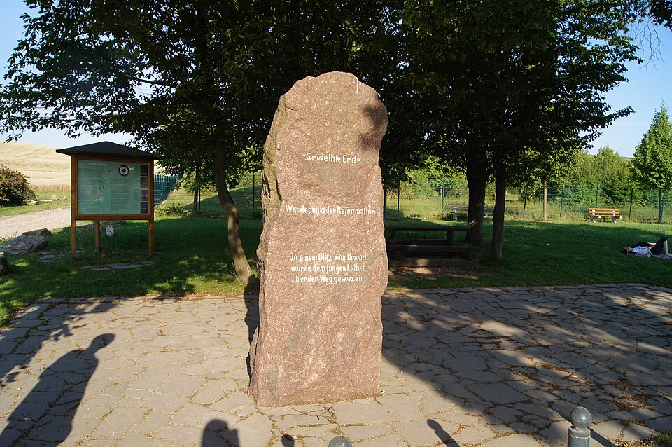
슈토테른하임의 루터슈타인 · 1917년 종교개혁 400주년에 슈토테른하임에 세워진 기념비. 비문에는 "여기서 마르틴 루터의 인생이 다시 시작되었다"고 새겨져 있다. [Wikimedia · CC BY-SA]
수도원의 일상은 가혹했다. 새벽 두 시 첫 기도, 하루 일곱 번의 기도, 단식, 침묵, 채찍질. 루터는 그 모든 것을 누구보다 열심히 했다. 동료들이 혀를 내두를 정도였다. 후일 그가 회고하기를, "만일 한 수도사가 자기 수도 생활로 천국에 갈 수 있다면, 그건 나였을 것이다." 그러나 그가 두려워한 것은 죽음이 아니라 의로운 하나님이었다. 자신이 아무리 고해성사를 해도, 작은 죄 하나가 또 떠올랐다. 그는 자기 영혼이 깨끗하지 않다는 공포에서 빠져나오지 못했다.
그가 수도원에서 보낸 시간은 단순한 종교적 열정이 아니라, 한 인간이 자기 구원의 확신을 손에 넣으려는 처절한 분투였다. 그는 하루에도 몇 번씩 고해실을 찾았고, 사소한 생각 하나까지 죄로 헤아렸다. 당시 신학은 인간이 진심으로 뉘우치고(contritio) 자기 힘으로 하나님을 사랑하면 은혜를 받는다고 가르쳤다. 그러나 루터는 자기 마음을 들여다볼수록, 자기 뉘우침조차 순수하지 않다는 것을 보았다. 벌이 두려워 뉘우치는 것이 과연 참된 사랑인가. 그 의심이 그를 끝없는 자기 검열의 미궁으로 몰아넣었다. 슈타우피츠가 그에게 십자가의 그리스도를 바라보라고, 자기 안이 아니라 자기 밖을 보라고 권한 것은 바로 그 미궁의 출구였다.
그가 가장 견디기 어려워한 것은 시편과 로마서에 거듭 나오는 한 단어, "하나님의 의(iustitia Dei)"였다. 당시 신학은 그것을 하나님이 죄인을 심판하는 의로 가르쳤다. 루터는 그 단어를 읽을 때마다 공포에 떨었다. "나는 그 의로운 하나님을 사랑할 수 없었다. 오히려 미워했다." 그가 1545년 자기 전집 서문에 솔직하게 적은 고백이다. 거룩하라고 명령하면서, 거룩할 수 없는 인간을 그 명령으로 심판하는 하나님이라면 어떻게 사랑할 수 있단 말인가. 그 분노가 수도원의 어두운 골방에서 몇 년을 끓었다.
1507년 그는 사제 서품을 받고 첫 미사를 집전했다. 빵과 포도주를 들어 올리는 그 순간, 그는 "살아 계신 영원하신 참 하나님" 앞에 자기가 선다는 생각에 손이 떨려 미사를 거의 중단할 뻔했다. 아버지 한스도 그 자리에 손님으로 왔다. 아들이 화해의 손짓으로 "왜 그토록 화를 내셨냐"고 묻자 아버지는 식탁에서 대답했다. "너는 부모를 공경하라는 계명을 못 읽었느냐?" 그 한마디가 평생 루터의 가슴에 남았다. 수도원 서원이 정말 하나님의 뜻이었는지, 아니면 한순간의 공포에서 나온 충동이었는지 그 의심이 결국 수도원 제도 자체를 다시 묻게 만든다.
나는 그 의로운 하나님을 사랑하지 못했다. 오히려 미워했다. 마침내 나는 깨달았다. 하나님의 의란 의인이 믿음으로 사는 그 선물이라는 것을. 그제야 나는 다시 태어난 기분으로, 열린 문을 통해 낙원에 들어선 듯했다.
Martin Luther, 라틴어 전집 서문, 1545 (WA 54, 185-186)
곁가지 — 슈타우피츠라는 스승
그의 회의를 가장 오래 들어준 한 사람이 있었다. 수도회 부총감 요한 폰 슈타우피츠(Johann von Staupitz)다. 루터가 매일 고해실로 찾아와 두 시간씩 자기 죄를 늘어놓자, 슈타우피츠는 한 번 폭발했다. "형제여, 하나님은 당신에게 화가 나신 게 아니라, 당신이 하나님께 화가 나 있는 겁니다. 그리스도가 진짜 죄인이었다면, 그대도 가짜 죄인이 아니겠습니까." 그리고 한마디 덧붙였다. "성경을 가르치게 되시오. 그러면 당신의 영혼이 무엇을 해야 할지를 알게 될 것이오." 슈타우피츠는 그 말로 비텐베르크 대학의 자기 강의 자리를 루터에게 넘겨주었다. 종교개혁이 시작된 그 강단의 첫 자리는 한 늙은 수도사의 사랑이 만든 자리였다.
[Bernd Moeller, "Staupitz und Luther" · Diarmaid MacCulloch, Reformation: Europe's House Divided]
비텐베르크
그가 수도원에 들어간 그해, 작센 선제후 현명한 프리드리히(Friedrich der Weise)가 비텐베르크 대학을 갓 설립한 지 3년째였다. 루터가 그 대학의 신학 교수로 부임할 자리가 그가 들어가지도 않은 그날부터 비어 있었다.
로마
그해 교황은 율리우스 2세. 일명 "전사 교황". 그는 갑옷을 입고 직접 군대를 지휘하며 교황령을 확장 중이었다. 그가 미켈란젤로에게 시스티나 천장화를 주문한 것이 그 다음 해다.
신성 로마
합스부르크의 막시밀리안 1세가 황제. 그의 손자가 19년 뒤 보름스에서 한 수도사와 대면한다.
오스만
바예지드 2세가 신대륙 발견 소식을 듣고도 무관심했다. 그의 손자 술레이만은 모를 일이었다 — 자기가 등극할 무렵 유럽의 분열이 시작되리라는 것을.
III
1510–1511년 · 로마
로마 순례 — 환멸의 도시
강의 듣기
"로마는 한 번 본 자에게는 행복을 주고, 두 번 본 자에게는 권태를 주고, 세 번 본 자에게는 환멸을 준다." — 후에 그가 적은 말이다.
1510년 늦가을, 수도회 내부의 분쟁을 청원하기 위해 두 수도사가 알프스를 넘어 로마로 향했다. 그중 한 사람이 27세의 루터였다. 약 1,500킬로미터를 두 발로. 알프스의 눈을 헤치며 거의 두 달이 걸렸다. 영원의 도시에 닿았을 때 그는 무릎을 꿇었다. "인사드립니다, 거룩한 로마여. 거룩하신 순교자들의 피로 거룩해진 로마여."
그러나 그가 본 로마는 거룩하지 않았다. 사제들은 한 시간에 미사를 여섯 번 드리며 — 라틴어 기도문을 절반씩 끊어 읽고 있었다. 루터가 한 문장을 천천히 외우는 동안 옆 사제는 이미 다음 미사를 시작했다. 한 신참 이탈리아 사제가 빨리하라 그를 재촉했다. "성차(聖餐)의 빵과 포도주에 그리스도의 몸과 피가 임한다고 진심으로 믿는다면, 어떻게 그렇게 빨리 할 수 있단 말인가." 그는 후일 적었다.
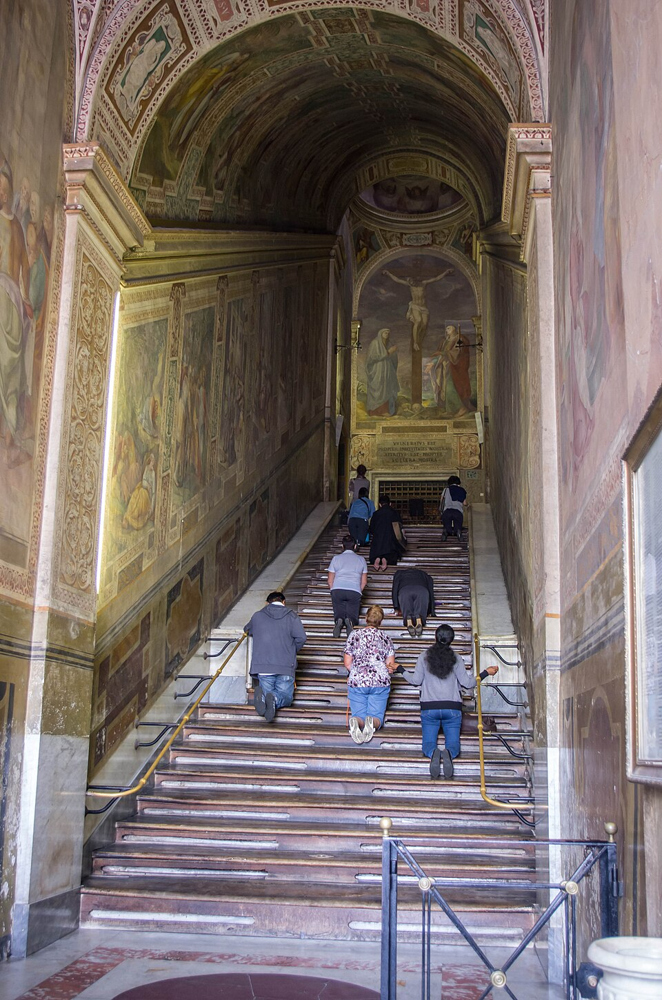
스칼라 산타(Scala Santa) · 로마 라테란 대성당 옆의 "거룩한 계단". 전승에 따르면 빌라도의 관저에서 옮겨온 28계단이다. 루터는 무릎으로 기어오르며 매 계단마다 주기도문을 외웠다. [Wikimedia · CC BY-SA]
그가 가장 충격을 받은 것은 그 거룩한 계단을 무릎으로 오르고 정상에서 일어났을 때 자기 안에서 의심이 솟아오른 일이었다. "이게 정말 효력이 있을까? 누가 아는가?" 후일 그는 자기 아들 파울에게 말했다. "내가 정상에 다다랐을 때 한 가지 생각이 떠올랐다. 의인은 믿음으로 살리라(habakkuk 2:4)." 사실은 그 깨달음이 정확히 그 계단 위에서 온 것은 아니었다. 후일 그가 회고를 정돈하면서, 한 점에 응축한 이야기일 가능성이 크다. 그러나 로마 여행이 그의 영혼을 흔든 것은 분명했다. 그는 비텐베르크로 돌아와 다시는 그 도시를 그리워하지 않았다.
흥미로운 것은, 그가 본 부패가 당시 모든 사람에게 부패로 보이지는 않았다는 점이다. 르네상스 로마는 예술과 학문의 절정에 있었고, 화려한 의식과 거대한 건축은 신앙의 영광으로 여겨졌다. 루터를 다르게 만든 것은 그가 본 광경 자체가 아니라, 그것을 견딜 수 없어 한 그의 양심이었다. 같은 도시를 보고도 누구는 감탄하고 누구는 절망한다. 종교개혁은 풍경의 문제가 아니라, 그 풍경을 어떤 눈으로 보느냐의 문제였다. 그리고 그 눈은 한 번 뜨이면 다시 감기지 않았다.
그가 로마에서 본 것은 화려함과 부패의 동거였다. 추기경들은 군주처럼 살았고, 거리에는 면죄의 효력을 광고하는 게시판이 즐비했다. 한 성당에서는 사도의 유골이라는 뼈를, 다른 성당에서는 그리스도의 발자국이라는 돌을, 또 다른 곳에서는 성모의 젖이라는 병을 팔았다. 순례자가 정해진 계단을 오르고 정해진 기도를 외우면 며칠, 몇 년의 연옥 형벌이 감면된다고 했다. 루터는 그 모든 것을 진심으로 따라 했다. 죽은 할아버지를 위해 그 계단을 오르며 빌었다. 그러나 마음 한구석에서 자라는 의심까지 막을 수는 없었다.
로마는 그를 즉시 개혁가로 만들지는 않았다. 그는 여전히 충실한 가톨릭 수도사였고, 비텐베르크로 돌아와 학위를 마치고 1512년 신학 박사가 되어 슈타우피츠의 강의 자리를 물려받았다. 그러나 영원의 도시에서 그가 본 균열은 마음 깊은 곳에 남았다. 7년 뒤 면벌부 논쟁이 터졌을 때, 그가 그토록 빠르게 로마의 권위를 의심할 수 있었던 것은 이미 한 번 그 도시의 맨얼굴을 두 눈으로 본 적이 있었기 때문이다.
비텐베르크로 돌아온 루터는 시편과 로마서, 갈라디아서를 차례로 강의했다. 바로 그 강단에서, 본문을 한 절 한 절 곱씹는 가운데 그의 신학이 빚어졌다. 후대 학자들이 "탑의 체험(Turmerlebnis)"이라 부르는 깨달음 하나님의 의가 심판이 아니라 선물이라는 의 자리가 정확히 어디였는지는 사료마다 다르다. 어떤 이는 수도원 탑의 골방을, 어떤 이는 강의 준비의 긴 밤들을 든다. 단번의 섬광이었는지 여러 해에 걸친 점진적 깨달음이었는지조차 학설이 갈린다. 분명한 것은, 로마의 환멸과 비텐베르크의 강단이 만나 한 사람의 내면에서 천천히 종교개혁의 불씨가 자라고 있었다는 사실이다.
로마 순례 (1510–1511)
목적아우구스티누스 수도회 내부 분쟁 청원
여정알프스 도보 횡단, 편도 약 1,500km
기간왕복 약 4개월, 로마 체류 약 4주
충격성직 매매, 면벌부 상업화, 형식적 미사
귀환 후1512년 비텐베르크 신학 박사 취득
로마에서는 한 시간에 일곱 번의 미사가 끝난다. "패사, 패사(빨리, 빨리)" 하고 그들은 외쳤다. 그들이 미사를 시작도 하기 전에 나는 아직 복음서 첫머리에 있었다.
Martin Luther, 『탁상담화』 (WA TR)
곁가지 — 면벌부의 출발점, 율리우스 2세의 성 베드로 대성당
루터가 로마에 도착했을 때, 성 베드로 대성당은 1년 전 율리우스 2세가 헐어 다시 짓기 시작한 거대한 공사장이었다. 옛 콘스탄티누스 시대의 바실리카가 사라지고, 미켈란젤로·라파엘로·브라만테가 차례로 설계도를 그릴 그 자리에는 잡석과 비계만이 있었다. 율리우스의 거대한 야망은 곧 돈을 필요로 했다 — 그 돈을 모으는 가장 빠른 길이 면벌부(免罰符) 판매였다. 다섯 해 뒤, 그 면벌부가 작센으로 흘러들어가 한 수도사의 분노를 폭발시킨다. 한 도시의 거대한 성당이, 그 성당을 지은 교회 자체를 가르는 도화선이 된 것이다.
[Ross King, Michelangelo and the Pope's Ceiling · Owen Chadwick, The Reformation]
피렌체
그가 로마에 도착할 무렵 메디치 가문은 잠시 추방된 상태. 마키아벨리가 그 도시의 외교관으로 활동하고 있었다. 다섯 해 뒤 그는 권력에서 밀려나 시골에서 『군주론』을 쓰게 된다.
스페인
카를(Carlos)은 그때 열 살의 소년. 9년 뒤 신성 로마 황제 카를 5세가 되어 루터와 대면한다.
오스만
술레이만 대제의 아버지 셀림 1세가 곧 즉위 — 6년 뒤 이집트를 정복하고 칼리프의 위를 차지한다.
1517년 가을, 마인츠의 대주교 알브레히트 폰 브란덴부르크는 자기 자리를 사기 위해 푸거 가문에서 거액을 빌렸다. 그 빚을 갚기 위해 면벌부 판매권을 얻었다. 판매원으로 임명된 사람이 도미니쿠스회의 수도사 요한 테첼(Johann Tetzel)이다. 그가 작센의 경계 너머를 돌며 외친 광고 문구는 후세에 가장 유명해진 면벌부 판매 멘트로 남았다. "동전이 함에 떨어져 짤랑하는 순간, 영혼이 연옥의 불꽃에서 튀어오른다(Sobald der Pfennig im Kasten klingt, die Seele aus dem Fegfeuer springt)."
면벌부 자체가 처음부터 사기는 아니었다. 본래는 십자군 참가나 순례, 자선 같은 참회 행위에 대한 교회의 형벌 감면이었다. 문제는 그것이 점점 돈으로 살 수 있는 상품이 되고, 살아 있는 자의 죄뿐 아니라 연옥에 있는 죽은 이들의 형벌까지 면제한다고 광고되면서였다. 테첼의 판매에는 정교한 가격표까지 있었다 왕과 제후는 25굴덴, 부유한 시민은 6굴덴, 가난한 자는 그 형편에 따라. 죄의 용서에 가격표가 붙은 것이다. 바로 그 점이 루터의 양심을 견딜 수 없게 만들었다.
비텐베르크에서 신학을 가르치던 33세의 루터는 분노했다. 작센 선제후 프리드리히가 자기 영지 안에서 면벌부 판매를 금지했으나, 비텐베르크 사람들은 강 건너 마을로 가서 그것을 샀다. 면벌부를 들고 자랑하며 더 이상 회개하지 않아도 된다 믿었다. 1517년 10월 31일, 만성절 전야, 루터는 라틴어로 된 95개의 토론 제목을 마인츠 대주교 알브레히트에게 편지로 보냈다. 그리고 전승에 따르면 같은 날 비텐베르크 성당의 문에 토론 게시판으로 늘 쓰이던 그 문에 95개 조항을 못 박았다고 한다.
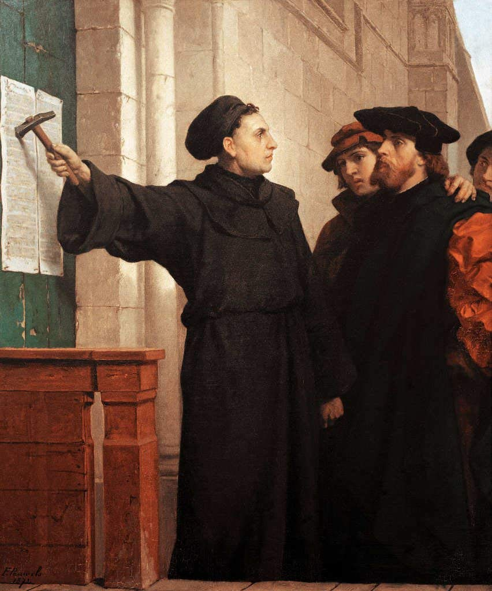
비텐베르크의 95개 조항 · 페르디난트 파우벨스(Ferdinand Pauwels) 1872년 작, 바르트부르크 성 소장. 망치질의 극적 장면은 후대의 회화적 상상이며, 사료적으로는 편지로만 보냈을 가능성도 있다. 그러나 그날의 사실 자체 그가 95개 조항을 공개적으로 던졌다는 것 은 확실하다. [Wikimedia · Public Domain]
95개 조항의 첫 조항은 단호했다. "우리 주 예수 그리스도가 회개하라(Poenitentiam agite)고 말씀하셨을 때, 그것은 신자의 전 생애가 회개여야 한다는 뜻이었다." 27번 조항은 테첼을 정면으로 겨눴다. "동전이 함에 떨어지자마자 영혼이 튀어오른다고 가르치는 자들은 사람의 가르침을 설교하는 자다." 86번 조항은 더 날카로웠다. "가장 부유한 크라수스보다 더 부자인 교황이 어찌하여 가난한 신자들의 동전이 아니라 자기 돈으로 성 베드로 대성당을 짓지 않는가?"
루터는 토론을 청한 것이었다. 그는 교회를 깨려 한 게 아니다. 그러나 라틴어로 쓴 그 95개 조항이 그의 동료들의 손에 빠르게 독일어로 번역되었고, 비텐베르크의 새 인쇄소를 통해 두 주 만에 독일 전역에, 두 달 만에 유럽 전역에 퍼졌다. 그가 의도하지 않은 일이었다. 그러나 한 번 풀린 화살은 돌아오지 않았다.
면벌부의 신학적 근거는 이른바 "공로의 보고(thesaurus meritorum)"였다. 그리스도와 성인들이 쌓아 둔 무한한 공로의 창고가 있고, 교황이 그 열쇠를 쥐고 있어 신자에게 나눠 줄 수 있다는 것이었다. 루터는 바로 그 전제를 흔들었다. 교회의 진짜 보물은 공로의 창고가 아니라 "하나님의 영광과 은혜의 가장 거룩한 복음"(62번 조항)이라고 그는 못 박았다. 죄의 용서는 사고파는 상품이 아니라, 회개하는 마음에 거저 주어지는 선물이라는 것 그것이 95개 조항을 관통하는 한 줄기였다.
테첼 또한 가만히 있지 않았다. 그는 프랑크푸르트 안 데어 오데르 대학에서 자기 반박문 106개 조항을 발표했고, 그 인쇄본이 비텐베르크에 도착하자 학생들이 광장에서 그것을 불태웠다 루터의 항의에도 불구하고. 도미니쿠스 수도회와 아우구스티누스 수도회의 해묵은 경쟁까지 이 논쟁에 얽혀 들었다. 한 신학적 토론으로 시작된 일이 수도회와 대학, 영주와 교황청이 얽힌 거대한 정치 사건으로 번지는 데에는 채 1년이 걸리지 않았다.
우리 주 예수 그리스도께서 "회개하라"고 하셨을 때, 그분은 신자의 전 생애가 회개이기를 원하신 것이다.
마르틴 루터, 95개 조항 제1조 (1517)
95개 조항이 퍼진 속도
게시1517년 10월 31일, 비텐베르크
형식라틴어 토론용 명제 95개
확산2주 만에 독일 전역, 2개월 만에 유럽
1518년루터 저작 약 30만 부 인쇄
평생 출판약 300만 부, 당대 최대 베스트셀러
곁가지 — 망치 없는 망치질
비텐베르크 성당의 문에 못을 박는 그 장면은 사실 — 동시대 사료에 한 줄도 없다. 그의 비서 멜란히톤이 30년 뒤 회고로 처음 적었고, 그 망치 소리는 그 후 종교개혁의 가장 유명한 청각적 이미지가 되었다. 그러나 1961년 가톨릭 역사가 에르빈 이저로(Erwin Iserloh)가 한 가지 주장을 했다 — "못 박은 일은 없었다. 단지 편지로 알브레히트 대주교에게 보낸 것일 뿐." 그 후 학계는 두 갈래로 갈렸다. 그러나 2006년 비텐베르크에서 발견된 한 노트 루터의 비서 게오르크 뢰러가 쓴 가 결정적 증거가 되었다. "1517년 만성절 전야에 박사 마르틴 루터께서 비텐베르크 성당의 문에 95개 조항을 못 박으셨다." 망치질은 어쨌든 있었던 것이다.
[Volker Leppin, Martin Luther · Andrew Pettegree, Brand Luther, Penguin]
곁가지 둘 — 인쇄기라는 신무기
구텐베르크의 인쇄기가 발명된 지 약 70년 만에 한 수도사의 95개 조항이 그 기술의 가장 강력한 활용 사례가 되었다. 1518년 한 해에만 루터의 글이 30만 부 인쇄되었다. 그가 평생 출판한 책의 총 부수는 약 300만 권 — 그 시대 유럽 인구의 4분의 1이 그의 책을 한 권씩 가졌다는 계산이 나온다. 후대 학자 앤드류 페테그리는 한 줄로 정리했다. "루터는 인쇄기를 종교개혁의 무기로 만든 첫 사람이다." 그가 거의 매일 글을 썼고, 비텐베르크에서만 인쇄소 다섯 곳이 생겼다. 메시지가 빨라야 살아남는 시대 — 그게 16세기였고, 그게 오늘날과 닮았다.
[Andrew Pettegree, Brand Luther: How an Unheralded Monk Turned His Small Town into a Center of Publishing, 2015]
스페인 · 신대륙
그해, 멕시코의 아즈텍 제국은 모크테수마 2세의 통치 아래에 있었다. 두 해 뒤 코르테스가 베라크루스에 상륙해 — 다른 종교개혁이 시작되리라는 것을, 아무도 몰랐다.
중국
명나라 정덕제의 환관 정치. 왕수인(왕양명)이 그해 강서에서 "심즉리(心卽理)"를 가르치고 있었다. 동방에서도 인간의 내면을 다시 보는 사상이 동시에 일어나고 있었다.
조선
중종 12년. 사림파가 조정에 진출하면서 조광조의 시대가 막 열리려 하고 있었다. 두 해 뒤 기묘사화로 무너지지만 한 개혁의 시도였다는 점에서, 같은 시대의 메아리였다.
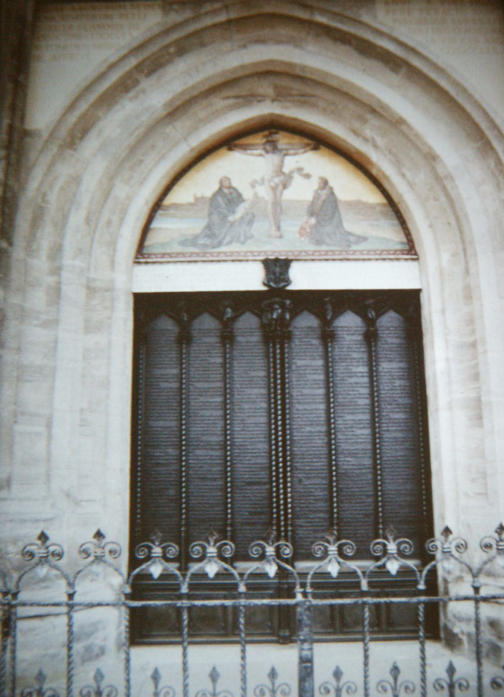
비텐베르크 성교회 문 · 95개조가 못 박힌 자리 [Wikimedia · CC]
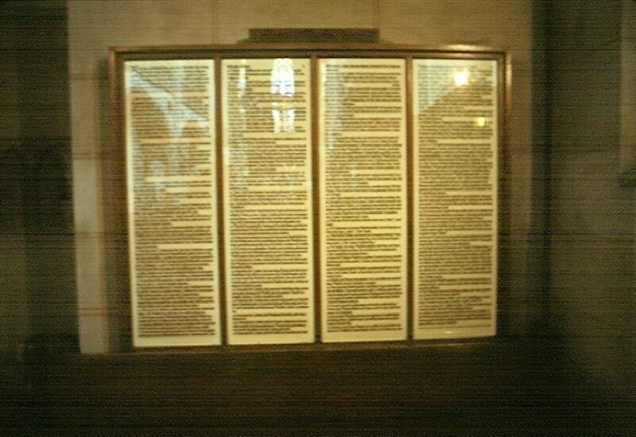
95개조 명제 청동문 · 비텐베르크 성교회 · 1517 [Wikimedia · CC]
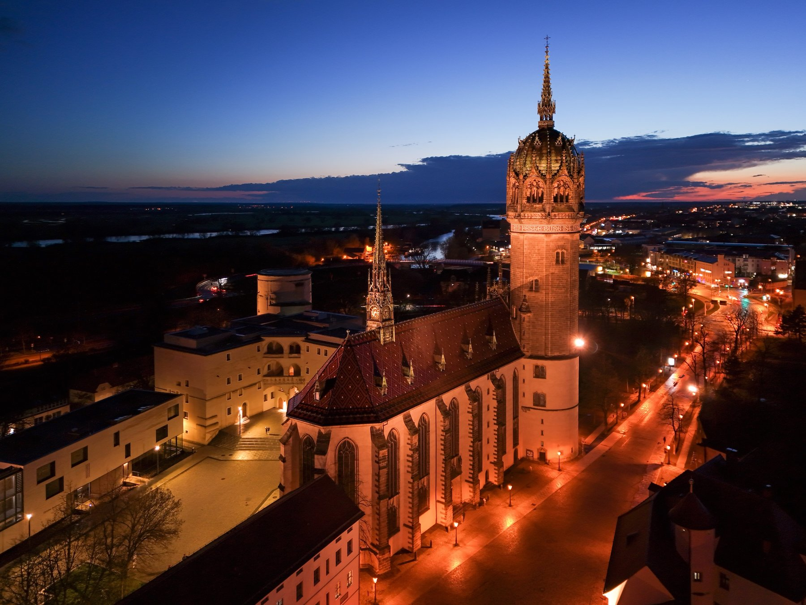
비텐베르크 성교회 항공 사진 · 2024 [Wikimedia · CC]
Tabula I · 광부의 아들이 자란 길
아이슬레벤·만스펠트·마그데부르크·아이제나흐·에르푸르트·비텐베르크 · 1483–1517년
신성 로마 제국 작센 선제후령 유년·수학의 이동
지도 · 루터의 세계는 작센 한 모퉁이에서 시작된다. 아이슬레벤에서 태어나 만스펠트에서 자라고, 마그데부르크·아이제나흐의 학교를 거쳐 에르푸르트 대학에서 배웠다. 그리고 1512년, 그가 평생 머물 비텐베르크의 강단에 섰다. 천 년 교회를 흔든 사람의 출발점은 반경 100킬로미터의 좁은 원이었다.
V
1518–1519년 · 아우크스부르크 / 라이프치히
아우크스부르크와 라이프치히 토론
강의 듣기
"한 글자라도 거두려 하지 않겠다. 오직 성경이 나를 설득한다면."
1518년 10월, 추기경 토마스 카예탄이 아우크스부르크에서 루터를 심문했다. 루터는 사흘간 그에게 무릎을 꿇었고, 사흘째에 일어서서 말했다. "한 글자도 거두지 않겠습니다." 카예탄은 분노했다. 그러나 루터는 그 도시에서 변복하고 야밤에 도망쳤다. 그를 보호한 것은 그의 영주 현명한 프리드리히였다. 작센의 선제후 프리드리히는 평생 한 번도 루터를 직접 만난 적이 없지만, 평생 한 번도 그를 넘기지 않았다.
1519년 6월, 라이프치히에서 잉골슈타트의 신학자 요한 에크(Johann Eck)와 루터의 동료 카를슈타트가 토론을 벌였다. 루터도 끌려나갔다. 에크는 노련했다. 그는 루터를 후스파(boemorum haeresim)와 연결지으려 했다. 백 년 전 콘스탄츠 공의회에서 화형당한 보헤미아의 개혁가 얀 후스. 그를 인정한다는 것은 공의회의 권위마저 부정한다는 뜻이었다. 그런데 루터는, 토론장에서 잠시 침묵하다가 답했다. "공의회도 오류를 범할 수 있다. 후스의 글들 중 일부는 가장 그리스도교적이고 복음적이었다."
라이프치히 토론 · 율리우스 휘프너(Julius Hübner) 19세기 회화. 13일간의 토론 끝에 결정적 순간은 루터가 백 년 전 화형된 후스의 정통성을 인정한 그 한 문장이었다. [Wikimedia · Public Domain]
이 한마디로 루터는 자기도 모르는 사이에 가톨릭 교회의 위계 체계 전체에 도전한 셈이었다. 그를 따르던 사람들 중 일부조차 두려워서 멀어졌다. 그러나 다른 일부는 보헤미아의 후스파 후예들이 그에게 후스의 책을 보냈다. 그가 그것을 읽고 적었다. "우리는 모두 후스파였구나. 우리가 모르는 사이에."
아우크스부르크 심문의 핵심 쟁점은 두 가지였다. 추기경 카예탄은 루터에게 두 점을 철회하라 요구했다. 첫째, 면벌부가 공로의 보고에서 나온다는 교황 교령(클레멘스 6세의 1343년 칙서)을 부정한 것. 둘째, 성사의 효력이 받는 자의 믿음에 달렸다고 한 것. 루터는 물러서지 않았다. "교황도 성경 위에 있지 않다. 교황도 성경에 비추어 판단받아야 한다." 이는 단순한 면벌부 비판을 넘어, 교회 권위의 최종 근거가 무엇이냐는 물음이었다. 훗날 종교개혁의 다섯 가지 구호 가운데 하나인 "오직 성경(sola scriptura)"의 씨앗이 거기서 자랐다.
라이프치히 토론은 13일간 이어졌다. 에크는 노련한 논쟁가였고, 청중 앞에서 루터를 이단으로 몰아붙이는 데 능했다. 그러나 루터가 후스를 인정한 그 순간, 토론의 성격이 바뀌었다. 그것은 더 이상 면벌부의 옳고 그름이 아니라, 교회의 공의회마저 오류를 범할 수 있느냐는 근본 물음이 되었다. 에크는 그 발언을 즉시 로마에 보고했다. 1년 뒤 파문 칙서가 날아온 직접적 빌미가 바로 그 한 문장이었다. 토론의 승패는 양측이 서로 자기가 이겼다 주장했지만, 진짜 결과는 루터가 돌아올 수 없는 강을 건넜다는 것이었다.
공의회도 오류를 범했고 또 범할 수 있다. 후스가 정죄당한 조항들 가운데 일부는 가장 그리스도교적이고 복음적인 것이었다.
마르틴 루터, 라이프치히 토론에서, 1519년 7월
토론과 심문의 해 (1518–1519)
1518·10아우크스부르크, 추기경 카예탄 심문
쟁점면벌부 교령 · 교황의 무오류성
1519·1밀티츠의 회유, 일시 침묵 합의
1519·6–7라이프치히 토론, 상대는 요한 에크
전환점후스의 정통성 인정 → 파문의 빌미
곁가지 — 그가 한 번도 만나지 못한 보호자, 현명한 프리드리히
작센 선제후 프리드리히 3세, 일명 현명한 프리드리히는 평생 한 번도 루터와 직접 대화한 적이 없다. 그를 만난 것은 단 한 번 — 보름스 의회로 가는 길에 토르가우 성에서, 그것도 차양 너머로 잠깐. 그러나 그는 루터의 안전을 위해 황제와 교황의 명령을 모두 거슬렀다. 왜였을까. 그는 가톨릭 신자였다. 비텐베르크의 성당에는 그가 평생 모은 17,443점의 성유물이 있었다. 그러나 그는 자기 영토에 끌려가지도 못한 한 수도사를 영주의 책임으로 지켰다. 후일 그가 임종 직전에 마침내 루터파 성찬을 받았다. 평생 처음이자 마지막이었다.
[Ingetraut Ludolphy, Friedrich der Weise · Cambridge History of Reformation]
신성 로마
1519년 1월 황제 막시밀리안이 죽었다. 6월 19세의 카를이 황제 선거에서 프랑스의 프랑수아 1세를 누르고 당선되었다. 그가 황제 카를 5세가 된다. 푸거 가문이 빌려준 돈 85만 굴덴 이 그를 황제로 만들었다.
오스만
술레이만 대제가 한 해 뒤 즉위. 그가 평생 카를 5세를 괴롭히게 된다 — 술레이만이 빈을 포위하지 않았더라면, 카를이 루터를 일찍 진압할 수 있었을지도 모른다.
일본
전국시대의 한복판. 호조 우지야스가 간토를 다지고 있었다. 한 세기 가까이 이어질 분열의 시간이었다.
VI
1520년 · 비텐베르크
세 편의 폭탄 글 / 파문 칙서를 불태우다
강의 듣기
"교황의 칙서를 불사르라 그는 진리를 불사른 자다."
1520년은 루터가 가장 많이 쓴 해다. 그해에 그는 세 편의 결정적 글을 차례로 발표했다. 8월 『독일 그리스도인 귀족들에게(An den christlichen Adel deutscher Nation)』. 평신도의 만인사제설을 주창하며, 독일의 영주들에게 교회 개혁의 책임을 맡겼다. 10월 『교회의 바빌론 유수에 대하여(De captivitate Babylonica ecclesiae)』. 일곱 성사를 두 개로 줄였다 — 세례와 성찬만 인정. 11월 『그리스도인의 자유에 대하여(Von der Freiheit eines Christenmenschen)』. 가장 짧고 가장 아름다운 글이었다. "그리스도인은 만물 위의 가장 자유로운 주이며 누구에게도 종속되지 않는다. 그리스도인은 만물의 가장 충실한 종이며 모두에게 종속된다."
그동안 로마에서는 "주여, 일어나소서(Exsurge Domine)"라는 교황 칙서가 1520년 6월 15일 발표되었다. 루터에게 60일 안에 자기 글을 거두라 명령했다. 거두지 않으면 파문이다. 루터는 60일을 기다리지 않았다. 12월 10일 비텐베르크 성 밖 엘스터 문 옆에서 학생들이 장작더미를 쌓았다. 그가 칙서를 그 안에 던졌다. 그리고 가톨릭 교회법전(Corpus Iuris Canonici)도 함께 던졌다. 한 도시의 광장에서 천 년 교회법이 재가 되었다.
파문 칙서를 불태우는 루터 · 칼 아스펠린(Karl Aspelin) 1885년 작. 칙서와 함께 던진 가톨릭 교회법전은 천 년간 서구의 사회법 그 자체였다. 그것을 태운 것은 교회 권위 전체를 거부한다는 신호였다. [Wikimedia · Public Domain]
1521년 1월 3일, 교황은 정식 파문 칙서 "로마 교황의 결정(Decet Romanum Pontificem)"을 발표했다. 루터는 1,400년 가톨릭 교회의 공식 식구가 아니게 되었다. 그러나 그는 그 사실에 떨지 않았다. 떨어야 할 사람은 그를 자기 영지로 부른 황제 쪽이었다.
세 편의 글은 각각 다른 방향에서 로마의 권위를 무너뜨렸다. 『독일 귀족들에게』는 세 개의 "로마의 성벽"을 허물었다. 영적 권력이 세속 권력보다 우위에 있다는 주장, 교황만이 성경을 해석할 수 있다는 주장, 교황만이 공의회를 소집할 수 있다는 주장. 루터는 세례받은 모든 그리스도인이 곧 사제라는 만인사제설(萬人司祭說)로 그 세 벽을 동시에 무너뜨렸다. "제화공, 대장장이, 농부도 각자 자기 직업의 일을 한다. 그러나 그들 모두가 이미 서품받은 사제이자 주교다."
『교회의 바빌론 유수』는 더 급진적이었다. 가톨릭의 일곱 성사 가운데 성경에 직접 근거가 있는 세례와 성찬만 인정하고 나머지를 부정했다. 화체설도 거부했다. 이 글로 인해 에라스무스를 비롯한 온건 인문주의자들까지 등을 돌렸다 그들이 보기에 루터는 이제 교회의 개혁이 아니라 교회의 해체로 가고 있었다. 그러나 가장 널리 읽힌 것은 가장 짧은 셋째 글, 『그리스도인의 자유』였다. 그 안에 종교개혁 영성의 핵심이 두 문장으로 응축되어 있었다.
그리스도인은 만물 위에 있는 가장 자유로운 주(主)이며, 누구에게도 종속되지 않는다. 그리스도인은 만물에 봉사하는 가장 충실한 종이며, 모두에게 종속된다.
마르틴 루터, 『그리스도인의 자유에 대하여』, 1520
1520년, 세 편의 폭탄 글
6월교황 칙서 「주여, 일어나소서」, 60일 철회 명령
8월『독일 귀족들에게』 — 만인사제설
10월『교회의 바빌론 유수』 — 성사 2개로 축소
11월『그리스도인의 자유』 — 신앙의 핵심
12·10비텐베르크에서 파문 칙서·교회법전 화형
곁가지 — 그가 한 번도 가지지 않은 마음의 평정
후세 사람들은 루터를 강철의 사나이로 그리지만, 정작 그 자신은 평생 불안과 우울에 시달렸다. 그는 그것을 안페히퉁(Anfechtung)이라 불렀다 — 영혼이 마귀에게 시험당하는 상태. 그는 자기가 옳다는 확신이 솟아오를 때마다, 그 옆에서 "네가 정말 옳은가? 너 혼자만 옳다는 그 확신은 어디서 오는가?"라는 의심이 함께 솟아오른다고 적었다. 바르트부르크 성에서 자기에게 잉크병을 던졌다는 전승이 있다 — 마귀를 향해 던졌다고. 잉크 자국은 사라졌지만, 그의 영혼의 어두운 면은 평생 사라지지 않았다.
[Lyndal Roper, Martin Luther: Renegade and Prophet · Erik Erikson, Young Man Luther]
스페인 · 멕시코
그해 코르테스가 테노치티틀란에 입성. 다음 해에 그 도시를 파괴한다. 아즈텍 제국이 무너지는 그해, 유럽에서는 또 다른 거대한 제국 교회 이 갈라지고 있었다.
오스만
술레이만 대제 즉위. 첫 정복지로 베오그라드를 함락. 헝가리로 향하는 길이 열렸다.
조선
중종 15년. 기묘사화로 조광조 등 사림파가 숙청된 다음 해. 한 개혁이 무너진 자리에서, 또 다른 개혁이 다른 대륙에서 시작되고 있었다.
VII
1521년 4월 · 보름스
보름스 의회 — 여기 내가 서 있다
강의 듣기
"여기 내가 서 있나이다. 다른 도리가 없습니다. 하나님 도와주소서. 아멘."
보름스 제국의회는 종교 재판이 아니라 정치 무대였다. 카를 5세는 광대한 제국을 물려받았으나 그 권력은 수백 개의 영방(領邦)으로 쪼개져 있었고, 황제는 제후들의 동의 없이는 한 발도 움직일 수 없었다. 루터 문제는 단순한 신학 논쟁이 아니라, 황제와 교황의 권위, 독일 제후들의 자립, 들끓는 민심이 한 점에서 부딪치는 화약고였다. 한 사람의 수도사를 어떻게 다루느냐가 곧 제국의 권력 구도를 시험하는 일이 되어 버린 것이다.
1521년 4월 17일, 라인 강변의 보름스. 21세의 신성 로마 황제 카를 5세가 처음으로 자기 제국 의회를 소집했다. 38세의 한 수도사가 그 의회에 불려나왔다. 황제가 직접 안전 통행권을 발급했다. 그 백 년 전 콘스탄츠에서 후스가 그런 통행권을 받고도 화형당한 일을 모두 기억했다. 친구들이 가지 말라 했다. 루터는 답했다. "보름스의 지붕 기와만큼 많은 마귀가 있어도 나는 갈 것이다."
의회장 가운데에 책 한 더미가 놓여 있었다. 모두 루터의 책이었다. 의회의 대변인 요한 폰 에크(라이프치히의 에크와는 다른 사람)가 두 가지를 물었다. "이 책들이 모두 당신의 것입니까? 그렇다면, 거두시겠습니까?" 루터는 첫 질문에는 그렇다고 답했다. 두 번째 질문에는 하루의 시간을 청했다. 황제는 허락했다.
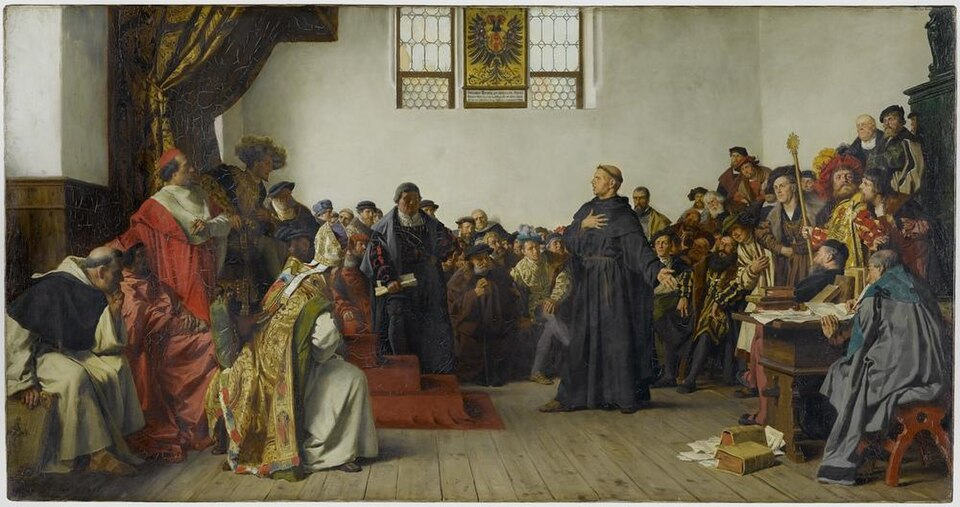
보름스 의회의 루터 · 안톤 폰 베르너(Anton von Werner) 1877년 작, 슈투트가르트 국립미술관. 황제와 영주들 앞에서 한 수도사가 자기 책을 거두지 않겠다 선언했다. 그는 다음날 두 번째로 불려가 마침내 그 결정적 문장을 말했다. [Wikimedia · Public Domain]
그 하루의 유예가 무엇을 의미했는지를 두고도 해석이 갈린다. 한 설은 루터가 처음에 황제와 제후들의 위세에 압도되어 잠시 흔들렸다고 본다. 다른 설은, 그가 자기 답변을 가장 효과적인 형식으로 다듬기 위해 의도적으로 시간을 벌었다고 본다. 분명한 것은, 그 하룻밤 사이 그가 두려움을 넘어섰다는 것이다. 이튿날의 답변은 떨리는 목소리로 시작되었으나 끝에 가서는 단호했다고 목격자들은 전한다.
4월 18일, 루터는 다시 의회 앞에 섰다. 그는 라틴어와 독일어로 차례로 답했다. "제가 거두지 않는 한, 성경의 증거나 명백한 이성으로 교황과 공의회는 자주 오류를 범했으니 저를 설득하지 못하신다면, 저는 제가 인용한 성경 구절에 묶여 있으며, 제 양심은 하나님의 말씀에 사로잡혀 있습니다. 한 글자도 거두지 않겠으며 거둘 수도 없습니다. 양심에 반하는 일은 안전하지도 솔직하지도 않기 때문입니다." 그리고 마지막에 그 한 마디가 따라왔다고 한다. "여기 내가 서 있나이다. 다른 도리가 없습니다. 하나님 도와주소서. 아멘(Hier stehe ich. Ich kann nicht anders. Gott helfe mir. Amen)."
곁가지 — "여기 내가 서 있다"는 정말 그가 말했나
이 가장 유명한 문장은 사실 동시대 의회록에는 없다. 처음 인쇄된 루터의 의회 답변본에는 그 마지막 문장이 빠져 있다. 그 한 줄이 인쇄본에 추가된 것은 의회 후 한 달 뒤, 비텐베르크에서 따로 출간된 판본부터다. 학자들은 두 갈래로 갈린다. 한 쪽은 루터가 정말 말했고 인쇄공이 후에 보완했다. 다른 쪽은 후세가 그의 말의 정신을 한 문장으로 응축했다. 어느 쪽이건 그 문장은, 한 사람이 권위에 맞서 자기 양심을 끝까지 지킨 행위의 가장 큰 메아리로 살아남았다. 마틴 루서 킹이 5백 년 뒤 워싱턴에서 "I have a dream"이라 외칠 때, 그 뒤에는 보름스의 그 한 문장의 그림자가 있었다.
[Brecht, Martin Luther: His Road to Reformation · Roland Bainton, Here I Stand, 1950]
황제 카를은 다음 날 자기 손글씨로 답서를 썼다. "한 수도사가 천 년의 그리스도교 전통이 틀렸다고 한다. 그렇지 않다면 그 천 년이 잘못이었다는 뜻인데, 그것은 있을 수 없다." 보름스 칙령(Wormser Edikt)이 5월 25일 발표되었다. 루터를 제국법 밖의 인물(Reichsacht)로 선언했다. 누구든 그를 죽이거나 잡아도 처벌받지 않는다. 그러나 그는 이미 사라진 뒤였다.
보름스로 가는 길 자체가 하나의 승리 행진이었다. 루터의 마차가 지나는 도시마다 군중이 몰려나왔다. 에르푸르트에서는 대학이 그를 환영했고, 그는 가는 곳마다 설교했다. 황제가 발급한 안전 통행권에도 불구하고 친구들은 끝까지 그를 말렸다 백 년 전 후스가 똑같은 통행권을 받고도 콘스탄츠에서 불태워졌기 때문이다. 그러나 루터는 가야 할 이유가 두려움보다 컸다. 한 수도사가 제국 전체의 권력 앞에 홀로 서는 그 장면 자체가, 그가 전하려는 메시지의 가장 큰 설교였다.
의회는 그의 답을 듣고도 즉시 처벌하지 못했다. 독일 영주들 가운데 상당수가 루터에게 동조하고 있었고, 무엇보다 그를 함부로 다루면 폭동이 일어날 분위기였다. 황제는 통행권을 지켜 그를 안전하게 돌려보낸 뒤에야 칙령을 내렸다. 그러나 칙령은 의회 다수가 이미 떠난 뒤 소수만 남은 자리에서 통과되었고, 그래서 법적 정당성에 대한 논란이 평생 따라다녔다. 더 결정적인 것은, 칙령이 종이 위의 선언으로 남았다는 점이다. 작센 선제후가 루터를 숨겨버렸기 때문이다.
제 양심은 하나님의 말씀에 사로잡혀 있습니다. 저는 아무것도 철회할 수 없고 철회하지도 않겠습니다. 양심에 반하여 행하는 것은 안전하지도, 옳지도 않기 때문입니다.
마르틴 루터, 보름스 제국의회 답변, 1521년 4월 18일
보름스 제국의회 (1521)
소집황제 카를 5세, 21세의 첫 제국의회
출석1521년 4월 17–18일, 루터 38세
안전권황제 발급, 후스의 전례에도 지켜짐
칙령5월 25일, 제국법 밖(Reichsacht) 선언
결과실효 미미 — 선제후가 루터 은닉
스페인
카를 5세는 의회 직후 스페인의 코무네로스 반란을 진압하러 떠났다. 그가 신성 로마와 스페인을 동시에 다스리는 한, 양쪽 어디에도 충분한 시간을 쏟지 못했다 — 그것이 종교개혁이 살아남은 정치적 조건이었다.
프랑스
프랑수아 1세가 이탈리아 전쟁의 한복판. 4년 뒤 파비아에서 황제에게 포로로 잡힌다.
오스만
술레이만이 베오그라드를 함락. 다음 해엔 로도스를 정복. 5년 뒤 모하치 전투에서 헝가리 왕국이 무너진다 — 그 모든 시간이, 카를이 루터에게 손을 뻗지 못하게 만든 시간이었다.
지도 · 1517년 비텐베르크에서 못 박힌 한 장의 종이가 라이프치히의 토론장으로, 보름스의 제국의회로 번져 나갔다. 황제 카를 5세가 그를 제국법 밖의 인물로 선언한 그날, 그의 영주는 그를 바르트부르크 성에 숨겼다. 그 성에서 독일어 신약성경이 태어난다. 작은 원 안에서 천 년 교회의 지도가 갈라지기 시작했다.
VIII
1521–1522년 · 바르트부르크
바르트부르크의 융커 외르크 / 독일어 성경
강의 듣기
"열한 달 동안 한 남자가 사라졌다. 그러나 그가 사라진 동안, 독일어 성경이 태어났다."
보름스를 떠나 귀향하던 1521년 5월 4일, 마차가 알텐슈타인 인근의 숲을 지날 때 — 무장한 일단의 기사들이 마차를 습격했다. 루터를 끌어내려 말에 태우고 사라졌다. 그 자리에 함께 있던 동료가 비명을 질렀다. "루터가 살해되었다!" 소식이 유럽에 퍼졌다. 알브레히트 뒤러는 일기에 적었다. "오, 신이시여, 루터가 죽었다면 이제 누가 우리에게 거룩한 복음을 해명해 줄 것입니까."
사실 그를 납치한 것은 그의 영주 작센 선제후 프리드리히였다. 그가 죽지 않은 채 사라지게 하기 위한 연극이었다. 루터는 튀링겐의 산 위에 우뚝 솟은 바르트부르크 성(Wartburg)으로 옮겨졌다. 거기서 그는 변복했다. 수염을 기르고, 머리를 길렀고, 기사의 옷을 입었다. 그는 자기를 "융커 외르크(Junker Jörg)" 게오르크 기사 라 부르라 했다.
프리드리히 선제후의 이 연극은 정치적 천재성의 산물이었다. 그는 루터를 직접 보호한다고 선언하면 황제와 정면충돌하게 되리라는 것을 알았다. 그래서 그는 루터가 어디 있는지 자기도 모르게 해 두었다 측근만 아는 비밀로 그를 사라지게 한 것이다. 누가 물으면 진심으로 모른다고 답할 수 있도록. 보름스 칙령은 종이 위에 남았고, 그것을 집행할 대상이 사라졌다. 이렇게 한 영주의 교묘한 처신이, 사형 선고를 받은 한 수도사에게 인생에서 가장 생산적인 열 달을 선물했다.
그러나 그 열 달은 평온하지만은 않았다. 갑작스러운 은둔 생활, 운동 부족, 풍성해진 식사로 그는 변비와 불면에 시달렸고, 깊은 우울과 영적 시험에 빠졌다. 그는 자기가 비겁하게 숨어 있는 것은 아닌지 자책했다. 동료들이 비텐베르크에서 개혁을 너무 급진적으로 밀어붙인다는 소식이 들려오자 그의 불안은 더 커졌다. 결국 그는 위험을 무릅쓰고 변장한 채 잠시 비텐베르크에 다녀오기까지 한다. 그 은신의 어둠 속에서 빛처럼 솟아난 것이 바로 독일어 성경이었다.
융커 외르크의 루터 · 루카스 크라나흐 1세 1522년경 작, 바이마르 클라식 슈티프퉁 소장. 수염을 기른 기사의 모습은 그 시대 누구도 그를 알아보지 못했다. 한 번은 비텐베르크에 몰래 다녀왔는데, 동료 멜란히톤조차 그를 알아채는 데 한참 걸렸다고 한다. [Wikimedia · CC BY-SA]
그 열한 달 동안 그는 한 가지 거대한 일을 했다. 신약성경을 그리스어 원전에서 독일어로 번역한 것이다. 11주 만에 끝냈다. 1522년 9월에 출간된 그 책은 일명 9월 성경(Septembertestament). 첫 인쇄본 3,000부가 두 달 만에 매진되었다. 그가 평생을 들여 구약까지 완역하는 데는 12년이 더 걸렸지만, 그 번역의 첫 망치질은 바르트부르크에서였다.
그가 한 가장 큰 일은 한 문장의 추가였다. 로마서 3장 28절. "사람이 의롭다 하심을 얻는 것은 율법의 행위에서가 아니라 믿음으로 된다." 루터는 그 문장을 번역할 때, 그리스어 원문에 없는 한 단어를 넣었다. "allein(오직)". "오직 믿음으로(allein durch den Glauben)". 후일 그는 그 단어를 비판한 사람들에게 답했다. "독일어는 그렇게 말한다. 라틴어 원문이 그 단어를 안 가졌다 하더라도, 독일 사람의 마음에 그 의미를 정확히 전달하려면 그 단어가 있어야 한다." 번역은 한 언어를 다른 언어로 옮기는 일이 아니라, 한 영혼을 다른 영혼에 옮기는 일이라는 그 통찰의 가장 유명한 사례가 되었다.
루터의 번역이 위대한 것은 정확성보다 그 언어 때문이었다. 그는 라틴어 문법을 독일어에 억지로 옮기지 않았다. 시장의 어머니, 골목의 아이, 들판의 농부가 실제로 쓰는 말을 들으려 했다. 그가 자기 번역 원칙을 적은 『번역에 관한 공개 편지』(1530)는 오늘날까지 번역학의 고전으로 읽힌다. "우리는 라틴어 글자가 어떻게 독일어로 옮겨질지를 물어서는 안 된다. 집 안의 어머니, 거리의 아이, 시장의 보통 사람에게 물어, 그들의 입을 보고, 그들이 어떻게 말하는지에 따라 번역해야 한다." 그 결과 그의 성경은 산산이 갈라진 독일 방언들 위에 하나의 표준 독일어를 세웠다. 괴테와 니체가 쓴 독일어의 먼 출발점이 그 번역이었다.
번역에는 동료들의 도움이 컸다. 구약을 옮길 때 그는 히브리어 전문가 멜란히톤, 아우로갈루스와 함께 단어 하나를 두고 며칠씩 토론했다. 욥기의 한 구절을 옮기는 데 나흘 동안 세 줄밖에 못 나갔다는 기록도 있다. 동물 이름, 보석 이름, 제사 도구의 이름은 비텐베르크의 푸줏간과 보석상까지 찾아가 확인했다. 1534년 마침내 구약과 신약을 합한 완역 『루터 성경』이 출간된다. 크라나흐 공방의 채색 목판화로 장식된 그 책은, 단순한 경전을 넘어 독일 민족의 책이 되었다.
집 안의 어머니에게, 거리의 아이들에게, 시장의 보통 사람에게 물어보아야 한다. 그들의 입이 어떻게 말하는지를 보고, 그에 따라 번역해야 한다.
마르틴 루터, 『번역에 관한 공개 편지(Sendbrief vom Dolmetschen)』, 1530
바르트부르크와 독일어 성경
은신1521년 5월 ~ 1522년 3월(약 10개월)
가명융커 외르크(기사 게오르크)
신약 번역그리스어 원전에서 약 11주 만에
9월 성경1522년, 초판 3,000부 즉시 매진
완역1534년 구약 포함 『루터 성경』 출간
곁가지 — 잉크병과 마귀
바르트부르크 성을 오늘 방문하면 한 방의 벽에 검은 얼룩이 있다. 안내인은 말한다. "루터가 마귀에게 잉크병을 던진 자국입니다." 사실 그 얼룩은 19세기에 관광객들이 끊임없이 새로 칠해 보존한 것이다 — 원래의 잉크는 17세기에 이미 마지막 한 방울이 닦여 없어졌다. 그러나 그가 그 방에서 마귀를 자주 보았다는 것은 사실이었다. 그는 어두운 우울에 빠져 있었고, 자기를 시험하는 어둠을 매일 느꼈다. 잉크병을 던졌든 안 던졌든, 그는 그 방에서 매일 마귀에게 자기 영혼을 잃지 않으려고 — 글을 썼다.
[Bainton, Here I Stand · Wartburg-Stiftung Eisenach, 공식 안내자료]
비텐베르크
그가 사라진 동안 비텐베르크는 카를슈타트와 츠빌링의 손에 맡겨졌다. 그들은 더 급진적으로 갔다 — 성상을 부수고, 미사를 단번에 폐지하고, 사제들의 결혼을 강요했다. 루터는 그 소식을 듣고 1522년 3월 변복한 채 비텐베르크로 돌아왔다. 여드레 동안 매일 설교했다 — 침수자(Invocavit) 설교. 그가 사람들에게 한 말은 의외였다. "천천히. 양심이 따라오지 않은 채 외형만 바꾸면, 우리는 새 율법주의를 만드는 셈이다."
스페인 · 멕시코
1521년 8월 13일 코르테스가 테노치티틀란을 함락. 한 종교가 죽어가던 그 도시에서 다른 종교가 죽어가는 도시에서 한 수도사가 성경을 번역하고 있었다.
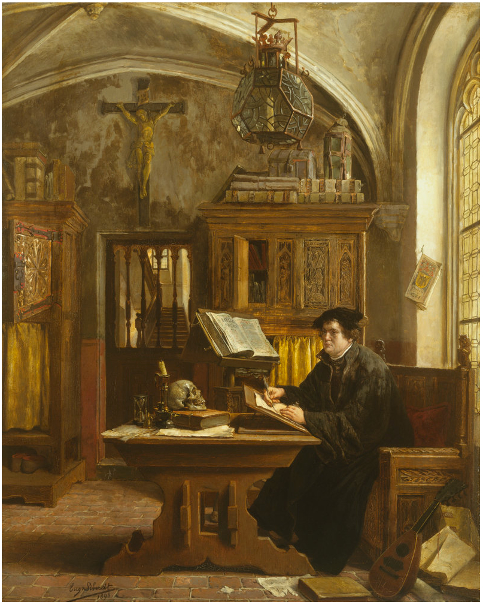
외젠 시베르트 『바르트부르크 성서 번역』 1521 [Wikimedia · PD]
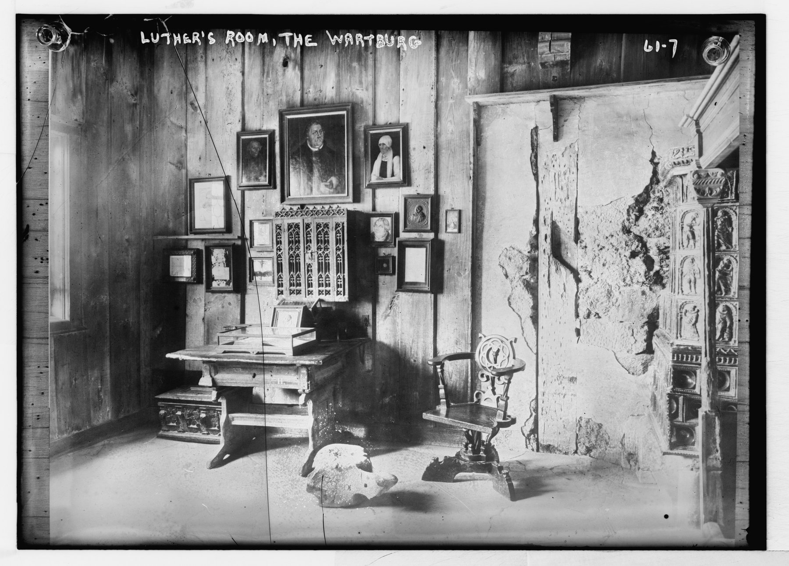
바르트부르크 성 · 루터가 신약을 독일어로 옮긴 방 [Wikimedia · PD]
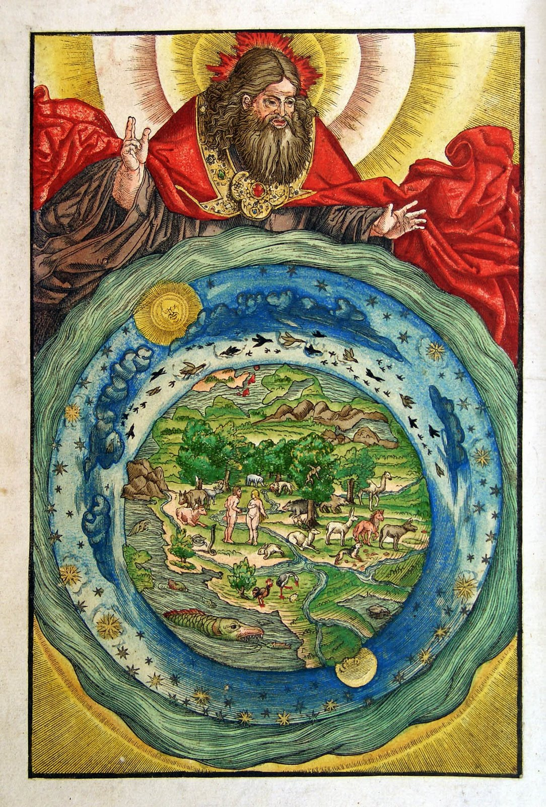
『루터 성서』 창세기 · 1534년 초판 채색 목판화 [Wikimedia · PD]
IX
1524–1525년 · 튀링겐
농민전쟁 — 토마스 뮌처와 결별
강의 듣기
"농민을 두들겨라, 찌르고, 죽여라. 미친개를 두들기듯이." — 그의 가장 어두운 글이 1525년 봄에 쓰였다.
1524년 여름부터 1525년 봄까지, 독일 남부와 중부에서 약 30만의 농민들이 무장 봉기를 일으켰다. 독일 농민전쟁(Deutscher Bauernkrieg). 그들의 12개 조항은 농노제 폐지, 마을 사제의 자유 선출, 십일조의 정당한 사용. 그들은 자신들의 요구가 바로 "순수한 복음"의 결과라 했다. "우리는 루터 박사가 가르치신 그리스도인의 자유를 살고자 한다."
봉기의 불씨는 단순한 경제적 불만만이 아니었다. 농민들은 루터가 외친 "그리스도인의 자유"와 "만인사제설"을 자기들의 언어로 읽었다. 모든 신자가 사제라면, 왜 농노는 영주의 소유물로 남아야 하는가. 성경이 모든 권위의 척도라면, 왜 봉건적 부역이 정당한가. 그들의 12개 조항은 거의 모든 요구를 성경 구절로 뒷받침했다. 종교개혁의 언어가 사회 혁명의 언어로 번역된 것이다 루터가 결코 의도하지 않은 방향으로.
한편 츠비카우의 한 사제 토마스 뮌처(Thomas Müntzer)는 더 멀리 갔다. 그는 루터보다 먼저 만인사제설을 거의 극단까지 밀고 갔고, 직접 농민들과 행동을 같이했다. "하나님이 영의 검을 우리에게 주셨다. 시대의 마지막에 우리가 적그리스도들을 쳐야 한다." 뮌처는 농민군의 지도자가 되었고, 1525년 5월 15일 프랑켄하우젠 전투에서 만 명의 농민이 전사한다. 뮌처는 잡혀 고문당하고 처형되었다 — 32살의 나이로.
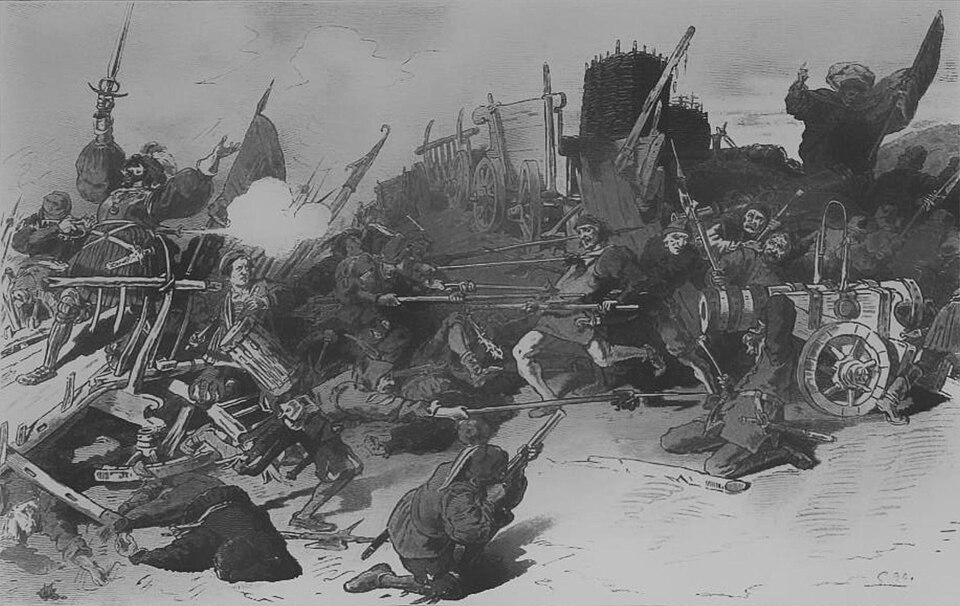
프랑켄하우젠 전투 · 오토 에밀 라우(Otto Emil Lau) 1890년 작. 1525년 5월 15일, 농민군 8천 명이 전사. 뮌처는 동굴에 숨어 있다 잡혔다 — 16세기 독일에서 가장 큰 사회 봉기의 비극적 종결이었다. [Wikimedia · Public Domain]
농민전쟁은 단일한 봉기가 아니라 슈바벤, 프랑켄, 튀링겐, 알자스, 티롤로 들불처럼 번진 여러 봉기의 총칭이었다. 농민들만이 아니라 광부, 도시 빈민, 하급 기사, 일부 사제까지 가담했다. 그들의 요구는 지역마다 달랐으나 한 가지 공통점이 있었다 자기들의 처지를 성경의 권위로 정당화했다는 것이다. 메밍겐에서 작성된 「12개 조항」은 유럽 최초의 인권 선언 가운데 하나로 꼽히기도 한다. 농노제는 그리스도의 피로 모두가 자유로워졌다는 복음에 어긋난다는 그 한 줄은, 3백 년 뒤의 노예 해방 논리를 앞당겨 울린 셈이었다.
그 사이 루터는 후대 사람들이 그의 인생에서 가장 변호하기 어려워하는 글을 썼다. 『농민들의 살인 떼와 강도 떼를 거슬러(Wider die räuberischen und mörderischen Rotten der Bauern)』. 1525년 5월 초, 봉기가 진압되기 직전. "누구든 할 수 있는 자는 농민을 두들겨라. 그들은 미친개와 같다. 너희가 그들을 죽이지 않으면 그들이 너희를 죽일 것이다. 한 농민을 죽이는 자는 그가 그대로 천국에 들어가리라."
루터의 해명은 농민들이 복음의 자유를 정치적 봉기로 오해했고, 영혼의 자유와 시민의 자유는 다른 차원이라는 것이었다. 그는 두 왕국 교리(Zwei-Reiche-Lehre)를 발전시킨다. 영적 왕국과 세속 왕국. 그러나 살아남은 농민들은 그를 배신자로 기억했고, 그의 영향은 도시에 한정되었다. 농민들의 지지를 잃은 그날, 종교개혁의 사회적 깊이가 거기서 멈췄다.
처음에 루터는 양쪽을 함께 꾸짖었다. 1525년 4월 발표한 『평화를 위한 권고』에서 그는 농민들의 12개 조항 가운데 일부가 정당하다 인정하고, 영주들에게는 가혹한 착취를 멈추라 요구했다. "이 반란의 책임은 농민이 아니라, 가난한 백성을 쥐어짠 영주와 사제 여러분에게 있다." 그가 정말 분노한 것은 봉기 자체가 아니라, 봉기가 폭력으로 번지고 자기 이름과 복음이 그 폭력의 명분으로 쓰이는 것이었다. 그러나 봉기가 약탈과 방화로 치닫자, 그의 펜은 무자비해졌다.
역사가들은 루터의 반농민 글을 두고 오래 논쟁해 왔다. 한 설은 그것이 종교개혁을 영주 권력에 종속시켜 독일 정치의 권위주의적 경향을 키웠다고 본다. 다른 설은, 봉기를 진압하지 않았다면 종교개혁 자체가 무정부 상태 속에 휩쓸려 사라졌으리라고 본다. 분명한 것은 하나다. 1525년 이후 종교개혁은 더 이상 아래로부터의 민중 운동이 아니라, 위로부터 영주들이 주도하는 국가 교회의 운동이 되었다. 그 방향 전환의 분기점에 농민전쟁이 있었다.
찌르고, 때리고, 죽여라. 할 수 있는 자는 누구든지. 반역자보다 더 해롭고, 더 독하고, 더 마귀 같은 것은 없기 때문이다.
마르틴 루터, 『농민들의 살인 떼와 강도 떼를 거슬러』, 1525
독일 농민전쟁 (1524–1525)
규모봉기 농민 약 30만, 독일 남·중부
강령「12개 조항」 — 농노제 폐지, 사제 선출
지도자토마스 뮌처(급진파), 32세 처형
결정전1525·5·15 프랑켄하우젠, 농민 대패
사망추정 7만~10만 명
곁가지 — 뮌처라는 그림자
토마스 뮌처는 종교개혁의 가장 어두운 양심이었다. 그는 루터가 비텐베르크의 영주들과 타협한다 생각했고 — "마르틴 비텐베르크"라 비꼬아 불렀다. 그가 처형된 뒤 400년이 지난 1525년, 동독 정부는 뮌처를 종교개혁의 진짜 영웅으로 기렸다. 옛 동독 5마르크 지폐에 뮌처의 얼굴이 새겨졌고, 1989년 통일 직전까지 그가 사용되었다. 한 사람의 평판은 그가 죽은 다음에도 정치적으로 계속 다시 정해진다. 뮌처에게는 루터의 그림자였고, 그 그림자가 길어, 4세기 뒤 그는 자기 시대를 다시 만나 부활했다.
[Eric Hobsbawm, Primitive Rebels · Friedrich Engels, Der deutsche Bauernkrieg, 1850 · Tom Scott, Thomas Müntzer]
스페인 · 황제
2월 24일 파비아 전투에서 카를 5세가 프랑스 왕 프랑수아 1세를 생포했다. 그 승리로 황제의 손이 자유로워질 듯 보였다 — 그러나 그가 이탈리아에 묶여 있는 사이 독일에서는 농민전쟁이 한창이었다.
오스만
술레이만이 헝가리를 향한 출정을 준비. 다음 해 모하치 전투에서 헝가리 왕국이 사라진다.
인도
같은 해, 바부르가 파니파트로 향하고 있었다. 다음 해 그가 무굴 제국을 세운다.
X
1525년 6월 · 비텐베르크
카타리나 폰 보라 결혼한 수도사
강의 듣기
"나의 케테가 없었다면, 비텐베르크는 다 무너졌을 것이다."
루터의 글은 수도원의 담장 안에도 스며들었다. 마리엔트론 수녀원의 젊은 수녀들은 몰래 그의 글을 읽으며, 자기들이 평생 갇혀 살아야 할 이유를 의심하기 시작했다. 서원이 정말 하나님의 뜻인가, 아니면 부모가 어린 딸을 떠맡긴 인간의 제도인가. 루터는 강요된 독신과 자발적 헌신을 구분했고, 부모에 의해 어린 나이에 수도원에 보내진 이들이 그곳을 떠날 자유가 있다고 가르쳤다. 그 가르침이 한 통의 편지로 수녀원에 닿았을 때, 아홉 명의 마음이 움직였다.
1523년 부활절 전야, 청어 통 일곱 개에 숨은 아홉 명의 수녀가 작센 영지 안의 마리엔트론 수녀원에서 탈출했다. 비텐베르크의 한 사업가 레오나르트 코페가 자기 마차의 청어 통에 그녀들을 숨겨 빼낸 것이다. 루터의 글이 그녀들의 마음을 흔든 결과였다. 모두 비텐베르크에 도착했고 — 루터가 그들에게 남편을 찾아주는 일을 맡았다. 하나하나 짝을 지어주었지만, 가장 마지막에 남은 한 명이 있었다. 카타리나 폰 보라(Katharina von Bora). 24살. 키가 작고, 가문은 몰락한 귀족, 의지가 강하고 — 자기 입으로 말했다. "루터 박사나, 그의 동료 암스도르프 박사가 아니라면, 나는 결혼하지 않겠다."
수녀들의 탈출은 목숨을 건 일이었다. 작센 영지에서 수도자가 수녀원을 떠나는 것은 중죄였고, 도와준 자는 사형에 처해질 수 있었다. 코페는 부활절 전야의 어둠을 틈타 빈 청어 통을 실은 마차로 그들을 빼냈다. 도착한 비텐베르크에서 루터는 책임을 느꼈다 그의 글이 그들의 옛 삶을 버리게 만들었으니. 당시 여성에게 가능한 길은 결혼뿐이었기에, 그는 한 사람씩 짝을 찾아 주었다. 그 가운데 가장 까다로웠던 마지막 한 사람이 결국 그 자신의 아내가 된다.
그 말이 농담으로 시작되었는지 진심이었는지 모르지만, 1525년 6월 13일 41살의 루터는 24살의 카타리나와 결혼했다. 사람들은 충격을 받았다. 한 명문 인문주의자 에라스무스는 비웃었다 "세계를 흔든 비극이 결국 결혼으로 끝났구나." 그러나 루터는 후일 그가 적었다 "내 결혼은 천사들을 웃게 하고 마귀들을 울게 했다."
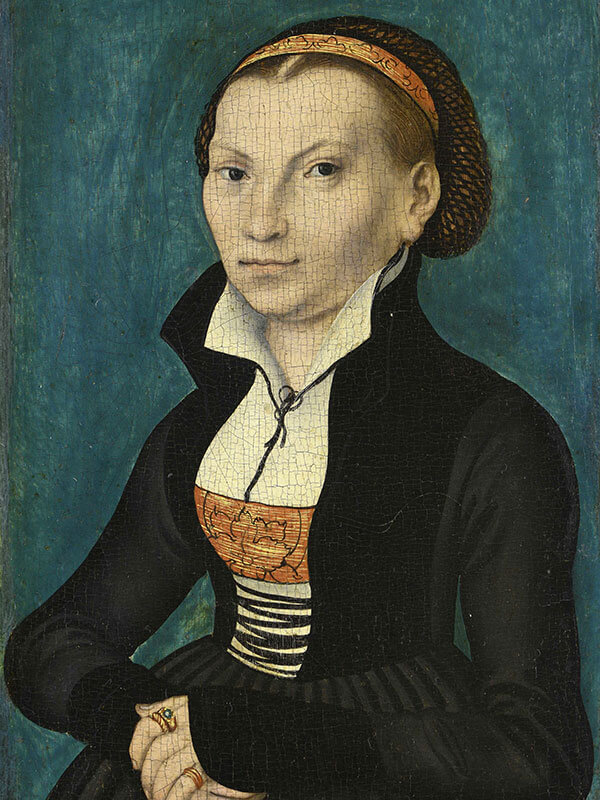
카타리나 폰 보라 · 루카스 크라나흐 1세 1526년 작. 비텐베르크의 옛 검은 수도원이 결혼 선물로 부부에게 주어졌다. 카타리나는 그 거대한 건물을 작센 최고의 가정 경제 단위로 만들었다. [Wikimedia · Public Domain]
카타리나의 행정 솜씨는 놀라웠다. 그녀는 옛 수도원을 농장으로, 양조장으로, 손님 숙소로, 인쇄소의 부속 사무소로 만들었다. 평생 학생 마흔 명, 손님 백 명, 어린이 여섯 명, 친척 열 명을 매일 먹였다. 그녀의 자작 맥주는 비텐베르크에서 평판이 높았다. 루터는 그녀를 평생 "케테(Käthe)" 또는 "나의 주(主), 케테(meine Herr Käthe)"라 불렀다.
일곱 아이가 태어났고, 그중 둘이 어려서 죽었다. 둘째 막달레나는 13살에 죽었다. 루터가 그녀의 임종을 지키며 흐느꼈다. "오, 나의 막달레나, 너는 우리를 떠나지만 너는 더 좋은 곳으로 가는구나. 영혼은 기뻐하지만, 살은 슬퍼한다." 그가 평생 가장 부드러웠던 순간 중 하나였다. 종교개혁자도, 결국 한 아버지였다.
루터의 결혼은 개인적 사건을 넘어 하나의 선언이었다. 천 년 동안 성직자의 독신은 거룩함의 표지였다. 한 파문된 수도사가 도망친 수녀와 결혼해 아이를 낳고 가정을 이룬다는 것은, 그 거룩함의 위계 전체를 뒤집는 일이었다. 그는 성(性)과 결혼을 죄나 차선이 아니라 하나님이 세우신 선한 질서로 보았다. "결혼은 수도원보다 더 거룩한 학교다. 거기서 우리는 인내와 사랑과 겸손을 매일 배운다." 목사가 가정을 이루는 개신교의 전통이 바로 이 비텐베르크의 검은 수도원 식탁에서 시작되었다.
카타리나는 단순한 살림꾼이 아니었다. 그녀는 농지를 매입하고, 가축을 기르고, 과수원과 양어장을 운영했다. 루터가 돈 관리에 무심해 자기 책의 인세조차 받지 않으려 하자 그녀가 가계를 꾸렸다. 루터는 유언장에서 당시 관례를 깨고 아내를 단독 상속인으로 지정했다 자녀의 후견인을 따로 두던 시대에 이례적인 일이었다. "나의 케테가 없었다면, 비텐베르크는 다 무너졌을 것이다." 그 한마디는 농담이 아니었다.
나는 내 케테를 프랑스와 베네치아를 다 준다 해도 바꾸지 않겠다. 첫째는 하나님이 그녀를 내게 주셨고 나를 그녀에게 주셨기 때문이며, 둘째는 다른 여인들에게 더 많은 결점이 있음을 내가 자주 보았기 때문이다.
마르틴 루터, 『탁상담화』 (WA TR)
루터의 가정
결혼1525년 6월 13일, 루터 41세·카타리나 24세
거처비텐베르크의 옛 검은 수도원(선물)
자녀6명, 그중 둘 어려서 사망(막달레나 13세)
식솔학생·손님·친척 등 매일 수십 명
유산목사 가정 전통의 출발점
곁가지 — "탁상담화"라는 16세기 카카오톡
루터의 집에는 매일 학생들과 손님이 둘러앉아 식사를 했다. 그 식탁에서 그가 풀어놓은 말들을 학생 한 명이 콘라트 코르다투스가 처음 시작하고, 디트리히, 슐라긴하우펜이 이어 받아 적었다. 그 노트들이 합쳐져 『탁상담화(Tischreden)』라는 책이 되었다. 루터 사후 1566년에 첫 출판. 그 안에는 그가 마귀와 결혼과 음악과 똥에 대해 한 말들이 그대로 들어 있다. "음악은 마귀를 쫓는다." "케테, 내가 너와 결혼한 것이 후회되느냐 묻는다면 나는 답하리라 한 번도 후회한 적 없다." "마귀는 진지함을 두려워하지 않고 즐거움을 두려워한다." 한 사람이 자기 생각을 의식하지 않고 한 말이, 후세에 가장 솔직한 그의 자화상이 되었다.
[Weimarer Ausgabe, Tischreden 1-6권 · Roland Bainton, 위의 책]
스페인 · 신대륙
코르테스가 멕시코를 평정한 다음 해. 황금이 세비야로 흘러들어가고 있었다.
오스만
술레이만이 모하치 전투(다음 해 1526)를 준비 중. 그가 헝가리를 깨뜨릴 때 카를 5세는 빈을 지키느라 루터에게 손쓸 틈이 없었다.
잉글랜드
헨리 8세가 캐서린과의 이혼을 검토하기 시작한 무렵. 루터의 결혼 소식을 듣고 격노했다 한다. 그러나 10년 뒤 그가 자기 자신의 종교개혁을 일으킨다 — 다른 이유로.
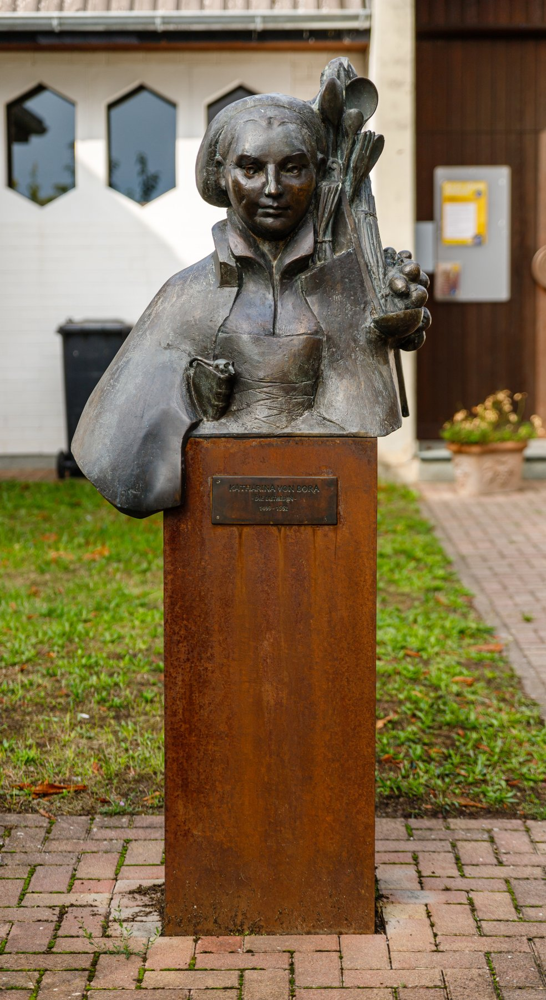
카타리나 폰 보라 · 루터의 아내 · 비텐베르크 동상 [Wikimedia · CC]
XI
1529–1530년 · 마르부르크 / 아우크스부르크
마르부르크 대담 / 아우크스부르크 신앙고백
강의 듣기
"이것은 내 몸이다. — 이 한 문장이 두 종교개혁자를 갈라놓았다."
1529년 10월, 헤센의 영주 필리프가 마르부르크 성에 두 사람을 불렀다. 루터와 스위스 취리히의 종교개혁자 훌드리히 츠빙글리(Huldrych Zwingli). 두 사람의 종교개혁은 거의 같은 시기에 시작되었으나 — 결정적인 한 점에서 갈렸다. 성찬이었다.
이 두 사람의 차이는 단순한 신학 논쟁이 아니라 세계를 보는 두 방식의 충돌이었다. 루터는 하나님의 말씀이 물질 안에 실제로 임할 수 있다고 믿었다 빵 안에 그리스도가, 물속에 세례의 은혜가. 츠빙글리는 더 합리적이고 상징적이었다. 보이지 않는 영적 실재와 보이는 물질은 구분되어야 한다는 것이다. 한쪽은 신비를, 다른 한쪽은 명료함을 택했다. 그 차이가 5백 년 뒤 루터교회와 개혁교회(장로교)의 성찬 신학을 여전히 가른다.
루터는 그리스도의 몸과 피가 빵과 포도주 안에 실제로 임한다 했다 — 가톨릭의 화체설(transsubstantiatio)은 거부하지만, 어떤 방식으로든 그리스도가 진짜로 있다. 츠빙글리는 빵은 빵이고 포도주는 포도주다. 성찬은 기억의 의식이다. 두 사람이 마르부르크에서 사흘간 토론했다. 루터는 식탁에 분필로 한 구절을 적었다. "호크 에스트 코르푸스 메움(Hoc est corpus meum) — 이것은 내 몸이다." 그리고 식탁 천으로 덮었다. 토론이 끝날 때 그는 천을 들어 그 한 줄을 가리켰다 — "이것 외에 더 할 말이 무엇이오."
마르부르크 대담 · 아우구스트 노아크(August Noack) 1867년 작, 다름슈타트 헤센 주립박물관. 1529년 헤센의 필리프가 신교 진영의 통일을 위해 두 사람을 불렀다. 14개 신앙 조항 중 13개에는 두 사람이 합의했다. 마지막 한 조항 성찬 에서만 갈라졌다. 그러나 그 한 조항이 신교를 둘로 갈랐다. [Wikimedia · CC BY-SA]
다음 해 1530년 6월, 아우크스부르크에서 황제 카를 5세가 제국 의회를 다시 열었다. 그는 9년 만에 독일로 돌아왔다. 루터는 보름스 칙령 때문에 의회에 나가지 못했고, 가까운 코부르크 성에 대기했다. 대신 그의 친구 필리프 멜란히톤이 그 부드럽고 학구적인 그리스어 교수가 신교 진영의 신앙고백을 작성했다. 『아우크스부르크 신앙고백(Confessio Augustana)』. 28개 조항. 그것을 의회 앞에서 황제의 비서가 두 시간에 걸쳐 독일어로 낭독했다. 황제는 그 자리에서 졸았다.
그 문서가 오늘까지 루터교회의 기본 신앙 문서로 남았다. 그 후 1531년 신교 영주들이 슈말칼덴 동맹을 결성했다. 황제와의 무력 충돌이 다가오고 있었다.
아우크스부르크 신앙고백이 의미 있는 것은 그 온건함과 명료함 때문이다. 그것은 신교가 새로운 종파를 만들려는 것이 아니라, 보편 교회의 본래 신앙을 회복하려는 것임을 차분히 변증했다. 분노와 비방 대신 신학적 논거로 자기 입장을 정리한 이 문서는, 종교개혁이 한 사람의 격정을 넘어 하나의 신앙 체계로 자리 잡았음을 보여 준다. 거리에서 외쳐진 95개 조항이 13년 만에 황제 앞에서 낭독되는 정식 신앙고백으로 자라난 것이다.
마르부르크에서 갈라진 한 조항은 작아 보였지만 그 결과는 거대했다. 만약 루터와 츠빙글리가 성찬에서도 합의했다면, 신교는 황제에 맞설 단일 전선을 이루었을지 모른다. 그러나 두 사람은 끝내 손을 잡지 못했다. 헤어질 때 츠빙글리가 눈물을 글썽이며 화해의 악수를 청했으나, 루터는 거절했다. "당신들은 우리와 다른 영(靈)을 가졌소." 2년 뒤 츠빙글리는 카펠 전투에서 스위스 가톨릭 군과 싸우다 전사한다. 루터는 그 소식을 듣고 차갑게 말했다 그가 칼을 들었으니 칼로 망한 것이라고. 같은 복음을 외친 두 사람 사이의 골은 그만큼 깊었다.
코부르크 성에 머문 다섯 달 동안 루터는 멜란히톤에게 끊임없이 편지를 보냈다. 신중한 멜란히톤이 황제와 가톨릭 측에 너무 양보할까 봐 노심초사했다. "나는 당신의 그 큰 걱정이 싫소. 그것은 믿음이 아니라 우리 자신을 짓누르는 짐이오." 아우크스부르크 신앙고백이 의외로 온건하게 작성된 것은 멜란히톤의 손길 때문이었다. 그것은 신교와 가톨릭 사이에 여전히 다리가 놓일 수 있다는 희망을 담고 있었다. 그러나 황제는 그 고백을 거부했고, 다리 대신 동맹과 전쟁의 길이 열렸다.
이것은 내 몸이다(Hoc est corpus meum). 이 말씀이 여전히 서 있는 한, 나는 그리스도께서 빵 안에 참으로 임재하심을 부인할 수 없다.
마르틴 루터, 마르부르크 대담에서, 1529년 10월
분열과 고백 (1529–1531)
1529·10마르부르크 대담, 14조 중 13조 합의
결렬점성찬 — 실재 임재 대 기념설
1530·6아우크스부르크 신앙고백(28개조)
작성멜란히톤, 루터는 코부르크 성에서 대기
1531슈말칼덴 동맹 결성, 무력 대결 예고
곁가지 — 멜란히톤이라는 부드러운 손
필리프 멜란히톤(Philipp Melanchthon)은 루터보다 14살 어린 그리스어 교수였다. 1518년 비텐베르크에 부임한 21살의 그를 보고 루터는 한눈에 반했다 — "이 어린 헬레니스트가 나보다 그리스어를 더 잘한다." 멜란히톤은 평생 루터를 보좌했다. 거칠고 격렬한 루터 옆에 그는 부드럽고 절제 있는 균형추였다. "내가 사슬을 부숴 길을 열면, 멜란히톤이 부드럽게 그 길을 닦는다"고 루터가 말했다. 그가 없었다면 종교개혁은 사상이 되지 못한 채 분노로만 끝났을지 모른다.
[Heinz Scheible, Melanchthon: Eine Biographie · Robert Kolb, Confessing the Faith]
오스만
1529년 9월, 술레이만 대제가 빈을 포위. 한 달간의 공방 끝에 후퇴. 카를 5세는 빈을 지키느라 루터를 죽일 시간이 또 없었다. 술탄의 군대가 루터 종교개혁의 가장 보이지 않는 동맹군이었다.
잉글랜드
헨리 8세가 캐서린과의 결혼 무효를 교황에게 요청. 거절당하면서 — 4년 뒤 영국 교회와 로마가 갈라진다.
독일 제후령의 신교화 · 농민전쟁 · 아우크스부르크 · 츠빙글리와 칼뱅의 스위스 · 1525–1555년
루터교 제후령 츠빙글리·칼뱅의 스위스 농민전쟁 격전지
지도 · 한 사람이 시작한 운동은 곧 그의 손을 떠났다. 북쪽 제후령은 루터교가 되었고, 농민들은 프랑켄하우젠에서 학살당했으며, 남서쪽 스위스에서는 츠빙글리와 칼뱅이 또 다른 종교개혁을 열었다. 마르부르크에서 루터와 츠빙글리가 갈라선 그 한 점이, 신교를 영원히 둘로 나누었다. 1555년 아우크스부르크 화의가 "영주의 종교가 그 땅의 종교"라는 원칙으로 그 분열을 법으로 굳혔다.
XII
1543–1546년 · 비텐베르크 / 아이슬레벤
늙은 루터의 그늘 — 죽음
강의 듣기
"우리는 거지다. 그것이 참말이다." — 그가 죽기 이틀 전 쪽지에 적은 마지막 말이었다.
늙은 루터를 무겁게 짓누른 것은 병만이 아니었다. 그는 자기가 시작한 운동이 분열하고 변질되는 것을 살아서 지켜보아야 했다. 츠빙글리파와 갈라섰고, 재세례파를 정죄했으며, 한때의 동지들과도 멀어졌다. 종교개혁은 그가 꿈꾼 정결한 복음 공동체가 아니라, 영주들의 정치와 신학자들의 분파 싸움으로 얼룩져 있었다. 그가 만년에 점점 더 거칠어진 데에는, 자기 손을 떠나 버린 운동에 대한 깊은 실망과 임박한 종말에 대한 묵시적 긴장이 함께 있었다.
1540년대의 루터는 그 자신도 좋아하지 않는 사람이 되어가고 있었다. 통풍, 결석, 만성 두통에 시달렸다. 가장 어두운 그림자는 『유대인과 그들의 거짓말들에 대하여(Von den Juden und ihren Lügen)』. 1543년 발표. 그는 유대인 회당을 불사르고, 그들의 집을 부수고, 기도서를 빼앗고, 랍비의 가르침을 금하라 주장했다. 그가 청년 시절 유대인들에게 가졌던 호의 "우리가 그들을 그리스도교화하려면 친절하게 대해야 한다" 가, 40년이 지난 끝에 그 정반대로 뒤집혔다. 후세의 가장 큰 그림자다. 사세기 뒤 나치가 이 책을 자기 선전물로 인용했다. 루터교회는 1994년에 공식적으로 그 책을 거부 — "우리는 루터의 1543년 글들을 강하게 비판하며, 그것이 우리 신앙 안에 자리가 없음을 분명히 한다"고 선언했다.
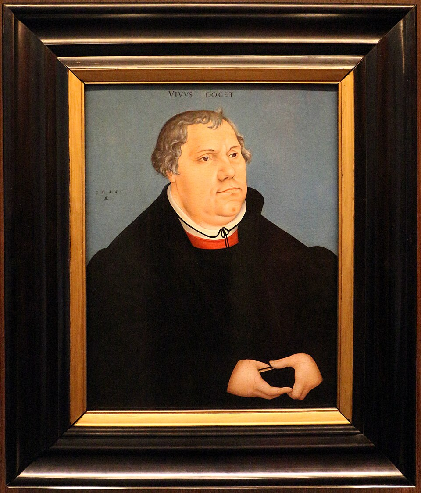
늙은 마르틴 루터 · 루카스 크라나흐 1세 공방, 1546년경 작, 카타레인콘번트 박물관 소장. 그가 죽기 직전의 모습이다. 통풍과 결석으로 걸음이 무거웠지만 마지막 설교까지 강단을 떠나지 않았다. [Wikimedia · CC BY-SA]
1546년 2월 초, 그는 자기가 태어난 도시 아이슬레벤에 한 가족간의 분쟁을 조정하러 갔다. 그 추운 도시에서 그는 다시 일어나지 못했다. 2월 18일 새벽 두 시 친구 유스투스 요나스가 곁에 있을 때 그가 마지막 호흡을 내쉬었다. 그 며칠 전 그가 머리맡 책상에 한 쪽지를 남겼다. 라틴어로 적힌 마지막 다섯 단어. "Wir sind Bettler. Hoc est verum. — 우리는 거지다. 이것이 참말이다."
루터의 마지막 설교 가운데 하나는 죽기 사흘 전 아이슬레벤에서 행해졌다. 병든 몸으로 강단에 선 그는 말을 다 맺지 못하고 내려와야 했다. "이 밖에도 할 말이 많으나, 나는 너무 약하다. 여기서 그치겠다." 평생 누구보다 말이 많고 글이 많던 사람이 마지막에 남긴 것은 그 미완의 침묵이었다. 그는 다시 강단에 서지 못했다.
그의 시신은 비텐베르크로 운구되어, 그가 95개 조항을 못 박았다는 그 성당의 강단 아래에 묻혔다. 한 해 뒤 황제 카를 5세가 슈말칼덴 전쟁에서 신교 동맹을 격파하고 비텐베르크에 입성했다. 한 부하 장군이 황제에게 권했다. "이단자의 무덤을 파헤쳐 그 뼈를 흩읍시다." 카를은 답했다. "나는 죽은 자와 싸우지 않는다. 살아있는 자와 싸운다." 그 한 마디로 루터의 뼈는 그 자리에 그대로 남았다.
위대한 인물을 정직하게 기억한다는 것은, 그의 빛과 어둠을 함께 보는 일이다. 루터의 어둠을 지우면 그는 신화가 되고, 그의 빛을 지우면 그는 괴물이 된다. 둘 다 진실이 아니다. 역사는 영웅이 아니라 인간을 기억할 때 비로소 우리에게 무언가를 가르친다.
1543년의 유대인 비판 글을 어떻게 읽어야 하는가는 여전히 가장 무거운 질문이다. 한 가지 분명히 해 둘 것이 있다. 그것을 16세기 종교 논쟁의 격렬함으로만 설명하려는 시도는 충분하지 않으며, 후대 학계 다수는 그 글의 폭력성이 변명될 수 없음을 인정한다. 동시에 그것을 19세기 이후의 인종주의적 반유대주의와 곧장 등치하는 것도 시대착오라는 지적이 있다. 루터의 적의는 인종이 아니라 종교를 향한 것이었다 그는 개종한 유대인은 형제로 받아들였다. 그러나 그 구분이 그 글의 잔혹한 제안들을 면죄하지는 못한다. 나치가 그 글을 자기 선전에 동원했을 때, 루터교회는 자기 역사 안의 이 어둠을 직시할 수밖에 없었다.
만년의 루터는 분노가 많은 사람이었다. 교황, 유대인, 츠빙글리파, 재세례파, 심지어 동료들까지 그의 거친 펜의 표적이 되었다. 그러나 같은 시기에 그는 가장 부드러운 글도 썼다. 아이들을 위한 『소교리문답』은 평신도가 신앙의 핵심을 외울 수 있도록 만든 명료한 책으로, 오늘까지 쓰인다. 그가 지은 찬송가들은 회중이 자기 언어로 함께 부르는 예배의 전통을 열었다. 거인의 두 얼굴 천 년 권위를 깨뜨린 용기와, 자기 안의 어둠 모두가 한 사람 안에 있었다.
우리는 거지다. 그것이 참말이다(Wir sind Bettler. Hoc est verum).
마르틴 루터, 죽기 이틀 전 마지막 쪽지, 1546년 2월 16일
만년과 죽음 (1543–1546)
1543『유대인과 그들의 거짓말들에 대하여』(어두운 유산)
지병통풍·결석·심장병·만성 두통
1546·2·18출생지 아이슬레벤에서 별세(62세)
안장비텐베르크 성교회 강단 아래
1994미국 루터교회(ELCA) 1543년 글 공식 거부
곁가지 — 본회퍼와 20세기의 루터
1543년의 유대인 비판 글은 16세기 종교 논쟁의 맥락에서 읽으려는 노력에도 불구하고, 20세기 나치 시대에 끔찍하게 오용되었다. 그러나 같은 루터교회 안에서 그 가장 격렬한 비판자도 나왔다. 본 디트리히 본회퍼(Dietrich Bonhoeffer)는 루터의 두 왕국 교리를 거꾸로 뒤집어 신앙은 국가에 복종이 아니라 저항이라 가르쳤다. 그는 히틀러 암살 음모에 가담하다 1945년 4월 9일 종전 한 달 전에 플로센뷔르크 강제수용소에서 처형되었다. 39살이었다. 그의 마지막 말. "이것이 나의 끝이지만 또한 시작이다(Das ist das Ende. Für mich der Beginn des Lebens)." 보름스의 그 한 문장이 4세기 뒤 — 한 신학자의 교수대에서 새로운 메아리로 살아났다.
[Eric Metaxas, Bonhoeffer · Dietrich Bonhoeffer, Letters and Papers from Prison · ELCA, "Declaration to the Jewish Community" 1994]
제국 · 슈말칼덴 전쟁
루터가 죽은 그해 가을, 카를 5세가 신교 영주들과 전쟁을 시작. 다음 해 4월 뮐베르크 전투에서 황제가 승리. 일시적으로 종교개혁이 끝난 듯 보였으나 — 1555년 아우크스부르크 종교화의에서 "cuius regio, eius religio(영주의 종교가 그 땅의 종교다)" 원칙이 확립되어 신교의 존재가 법적으로 인정되었다.
잉글랜드
헨리 8세가 같은 해 1월 죽었다. 그의 아들 에드워드 6세의 짧은 통치, 그리고 9살 누이 엘리자베스가 12년 뒤 즉위해 자기 시대를 연다.
인도 · 동아시아
무굴 제국의 후마윤이 페르시아로 망명 중. 조선에서는 명종 즉위 후 을사사화의 그늘. 일본은 전국시대의 막바지로, 오다 노부나가가 13살이었다.
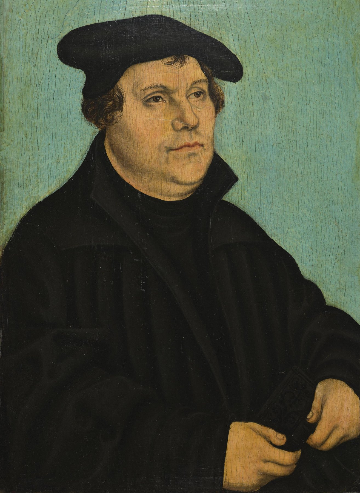
크라나흐 (大) 『루터 초상』 1532 · 에르미타주 [Wikimedia · PD]
XIII
Aliae Visiones · 다른 시선들
다른 시선 — 칼뱅·뮌처·본회퍼
강의 듣기
한 사람이 시작한 운동은 그가 살아 있을 때 이미 그의 손을 떠난다. 루터를 둘러싸고 다섯 개의 다른 시선이 동시에 그를 본다.
마르틴 루터만큼 평가가 갈리는 인물도 드물다. 누군가에게 그는 그리스도교 신앙을 본래의 복음으로 되돌린 예언자이며, 다른 누군가에게는 천 년 교회의 일치를 깨뜨린 분열의 장본인이다. 어떤 이는 그를 근대적 양심과 개인의 자유를 연 선구자로 기리고, 어떤 이는 농민을 배신하고 영주 권력에 굴복한 보수주의자로, 또 어떤 이는 그의 후기 저술에서 끔찍한 반유대주의의 그림자를 본다. 이 모든 평가가 동시에 어느 정도씩 참이라는 점에 루터라는 인물의 복잡함이 있다.
역사 속 인물을 한 가지 색으로 칠하는 것은 늘 쉽고, 늘 틀린다. 루터를 정직하게 보려면 그가 살았던 16세기의 격렬함과, 그 격렬함 너머로 남은 그의 유산을 함께 보아야 한다. 그가 남긴 가장 큰 것은 어쩌면 특정 교리가 아니라, 권위 앞에서도 양심을 굽히지 않을 수 있다는 한 인간의 본보기였다. 아래의 다섯 시선은 그 한 사람이 5백 년 동안 얼마나 다르게 읽혀 왔는지를 보여 준다.
여기 내가 서 있나이다. 나는 달리 어찌할 수 없습니다. 하나님 나를 도우소서. 아멘.
마르틴 루터에게 돌려지는 말, 보름스 1521 (후대 인쇄본에 추가)
오늘날의 루터 — 숫자로 보는 유산
개신교 인구전 세계 약 9억(인류의 약 11%)
루터교약 8천만, 독일·북유럽·미국 중심
독일어『루터 성경』이 표준 독일어의 기초
1999가톨릭·루터교 「의화 공동선언」 서명
2017종교개혁 500주년, 비텐베르크 기념
① 가톨릭의 시선 — "그러나 그는 우리 형제"
가톨릭의 시선은 5백 년 동안 가장 크게 변한 시선이다. 처음에 로마는 그를 교회를 찢은 이단자로만 보았다. 그러나 종교개혁은 가톨릭 자신도 바꾸어 놓았다. 면벌부의 남용은 금지되었고, 성직자 교육이 강화되었으며, 신학과 전례가 정비되었다. 루터가 비판한 많은 폐단을 가톨릭 스스로가 트리엔트 공의회에서 고쳤다는 사실은, 그의 외침이 적에게조차 변화를 강요했음을 말해 준다.
16세기 가톨릭 측은 그를 적그리스도라 불렀다. 트리엔트 공의회(1545-1563)는 종교개혁에 대한 답으로 가톨릭 자체를 새롭게 정비했다 — "트리엔트 가톨릭"이라는 새로운 시대가 그 결과다. 그 후 400년간 가톨릭과 루터교회는 서로 보지 않았다. 그러나 1999년 10월 31일 — 아우크스부르크에서 루터교회 세계연맹과 로마 가톨릭교회가 「의화 교리에 관한 공동 선언(Joint Declaration on the Doctrine of Justification)」에 서명했다. 95개 조항이 못 박힌 지 482년 만이었다. "의화는 오직 은혜로, 오직 그리스도의 공로로, 오직 믿음을 통해 일어난다"는 점에 두 교회가 공통의 신앙으로 합의했다. 한 수도사의 외침이 5세기를 건너 그 외침이 시작된 자리로 돌아온 것이다. 프란치스코 교황은 2016년 종교개혁 500주년을 한 해 앞두고 스웨덴 룬드의 루터교회 대성당에서 공동 예배에 참여했다.
[Joint Declaration on the Doctrine of Justification, Lutheran World Federation / Vatican, 1999 · Pope Francis, Lund 2016]
② 칼뱅의 시선 — 다음 세대의 더 엄정한 루터
두 사람은 평생 한 번도 만나지 않았고, 직접 편지를 주고받은 적도 거의 없다. 그러나 칼뱅은 루터를 깊이 존경했다. 그는 한 편지에서 루터를 "그리스도의 가장 탁월한 사도"라 불렀고, 루터가 자신의 견해를 거칠게 비판했다는 소식을 듣고도 "설령 그가 나를 마귀라 불러도, 나는 그를 하나님의 위대한 종으로 공경하겠다"고 답했다. 한 세대 차이를 둔 두 거장의 그 거리감과 존경이, 개신교가 단일한 인물의 종교가 아니라 여러 흐름의 합류임을 보여 준다.
장 칼뱅(Jean Calvin)은 루터보다 26살 어린 프랑스인이었다. 그는 루터의 95개 조항이 나올 때 8살이었다. 1536년 27세에 첫 판본 『기독교 강요(Institutio Christianae Religionis)』를 출간하면서 — 사실상 종교개혁의 다음 세대를 열었다. 그는 루터보다 더 체계적이고 더 엄정했다. 예정설(predestination)을 중심에 두고, 교회 정치를 장로제로 재편했다. 루터교회가 독일·스칸디나비아에 머문 반면, 칼뱅교회는 스위스 제네바에서 출발해 네덜란드·스코틀랜드·잉글랜드 청교도·프랑스 위그노·헝가리·미국 동부로 퍼져나가 세계화되었다. 막스 베버가 『프로테스탄트 윤리와 자본주의 정신』에서 분석한 그 자본주의 정신의 뿌리는 루터가 아니라 칼뱅이었다. 한 광부의 아들이 시작한 운동이, 한 세대 뒤 다른 사람의 손에서 전혀 다른 모양으로 자라났다.
[Bruce Gordon, Calvin, Yale UP · Max Weber, Die protestantische Ethik]
③ 뮌처와 농민의 시선 — 배신당한 종교개혁
토마스 뮌처는 죽기 직전 한 편지에 적었다. "비텐베르크의 마르틴은 자기 교회를 영주들의 보호 아래 두었다. 그가 영혼만 자유롭다 가르치는 동안, 그의 농민들은 영주들의 채찍 아래 종 그대로 남아 있다." 그가 죽은 지 4세기 뒤 동독 정부가 뮌처의 얼굴을 5마르크 지폐에 새겼다. 농민들의 봉기를 사회주의 혁명의 첫 메아리로 본 것이다. 학자 에른스트 블로흐는 1921년 『토마스 뮌처, 혁명의 신학자』를 발표하며 — "종교개혁은 비텐베르크에서 시작되었지만, 종교개혁의 진짜 약속은 알슈테트에서 죽었다"고 적었다. 루터의 그늘에 가려진 또 다른 종교개혁이 그렇게 한 번씩 다시 떠오른다.
[Ernst Bloch, Thomas Münzer als Theologe der Revolution, 1921 · 동독 5마르크 지폐 1975-1990]
④ 본회퍼와 저항의 신학 — 1543년의 그림자를 뒤집다
20세기 독일 루터교회가 마주한 가장 어두운 시험은 나치였다. 1933년 5월 10일, 베를린 광장에서 나치 학생들이 책을 불태웠다 — 그 불 옆에서 한 사람이 말했다. "마르틴 루터의 정신 안에서, 우리는 비독일적 책들을 불태운다." 루터의 1543년 글이 그 자리에 인용되었다. 그러나 같은 루터교회 안에서 가장 강력한 저항이 나왔다. 본 디트리히 본회퍼의 고백교회(Bekennende Kirche)는 1934년 바르멘 선언에서 "그리스도 외의 어떤 권력도 신앙의 대상이 될 수 없다"고 단언했다. 본회퍼는 1939년 미국에서 안전한 자리를 거절하고 독일로 돌아왔다 "이 시대를 함께 살지 않으면 이 시대 후의 독일을 위해 일할 권리가 없다." 그의 1945년 처형은 루터의 1543년이 남긴 그늘을, 다른 루터교인이 자기 목숨으로 갚는 행위였다. 한 사상이 자기 안에 함께 가진 두 얼굴을 4세기에 걸쳐 두 후예가 각각 살아냈다.
[Dietrich Bonhoeffer, Ethics / Cost of Discipleship · Barmer Erklärung 1934 · Eric Metaxas, Bonhoeffer]
⑥ 한국의 시선 — 늦게 도착한 종교개혁
루터의 종교개혁은 한반도에 3백 년 넘게 늦게 도착했다. 19세기 말 미국과 캐나다의 장로교·감리교 선교사들이 들어오면서 비로소 개신교가 뿌리내렸는데, 그 신학의 먼 원천에 루터가 있었다. 흥미로운 것은, 한국 개신교의 주류가 루터교가 아니라 칼뱅 계열의 장로교라는 점이다. 루터가 마르부르크에서 츠빙글리와 갈라선 그 한 점이, 5백 년 뒤 한반도의 교파 지형에까지 그림자를 드리운 셈이다. 오늘날 한국 인구의 약 5분의 1이 개신교인이며, 한글 성경 번역의 정신 어려운 한자어가 아니라 백성의 말로 성경을 옮긴다는 그 정신은 "시장의 보통 사람의 입을 보라"던 루터의 번역 원칙과 정확히 같은 자리에 서 있다.
[옥성득, 한국 기독교 형성사 · 류대영, 한국 근현대사와 기독교 · 대한성서공회 자료]
⑤ 오늘의 시선 — 한 사람의 외침은 어디까지 갔나
오늘 세계 인구의 약 11퍼센트, 약 9억 명이 그가 시작한 한 운동의 후예다. 미국 인구의 절반, 북유럽의 거의 전부, 한국의 약 20퍼센트. 95개 조항이 못 박힌 비텐베르크의 성당 문 — 지금 그 자리에는 1858년에 청동 문이 새로 세워졌다. 95개 조항이 그 청동에 새겨져 있다. 매년 10월 31일 그 도시에는 종교개혁의 날 세계에서 사람들이 모인다. 한 광부의 아들이 시작한 한 외침이, 그가 평생 발 디딘 200킬로미터의 원을 넘어 — 5백 년 뒤 다섯 대륙으로 퍼졌다. 그러나 가장 큰 유산은 어쩌면 종교가 아닐지 모른다. "양심이 권위보다 위에 있다"는 그 한 가지 명제 보름스에서 그가 말한 그 한 문장 이 근대 세계의 한 기둥이 되었다. 미국 헌법의 양심의 자유 조항, 인권 선언, 정치적 저항권 — 모든 것이 그 한 수도사의 한 마디에 빚지고 있다. 그가 보았더라면, 그는 다시 한 번 말했을 것이다. "나는 한 글자도 거두지 않겠다."
[Pew Research, Global Christianity 2011 · Andrew Pettegree, 위의 책 · World Lutheran Federation 통계]
도판 모음 — Iconographia
비텐베르크 교회 문에서 보름스 의회까지. 한 광부의 아들이 천 년의 권위 앞에서 양심을 거두지 않은 흔적들.
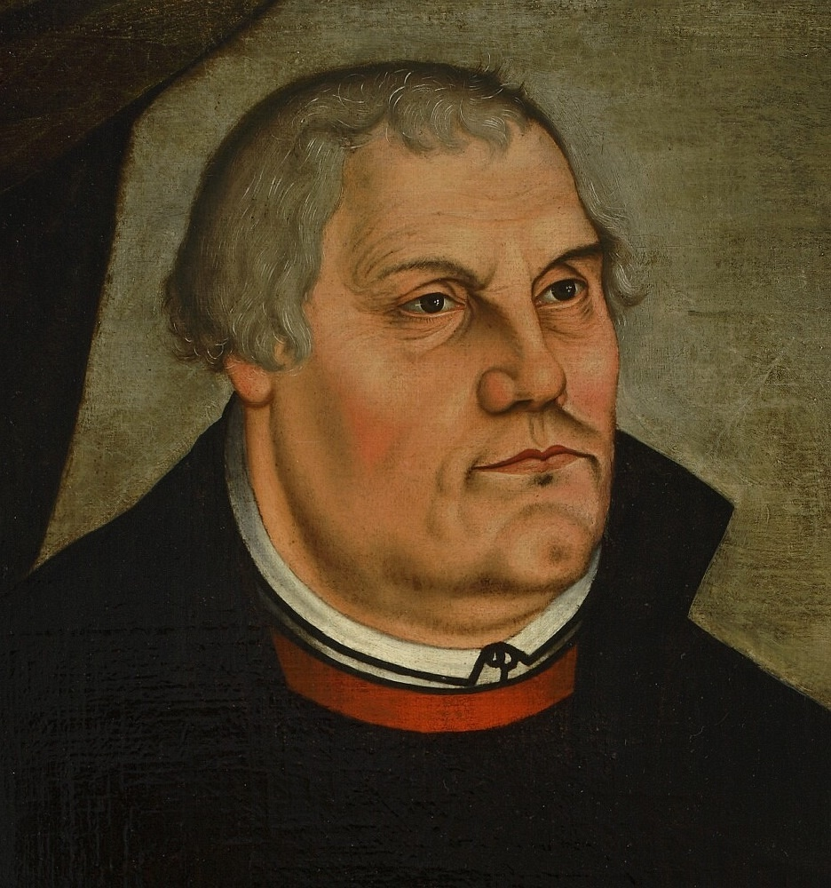
크라나흐 (子) 『루터 초상』 디테일 [Wikimedia · PD]
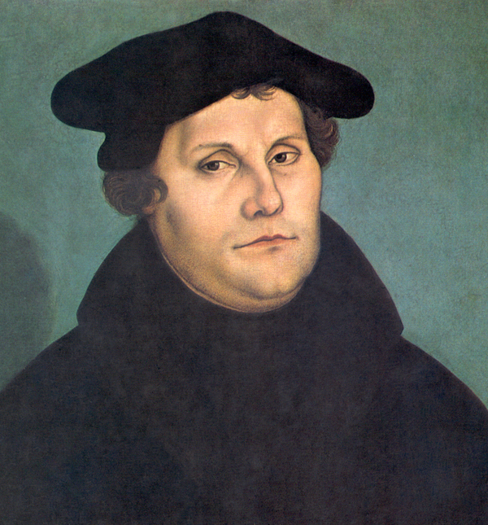
크라나흐 『루터 초상』 복원본 [Wikimedia · PD]『보름스 의회의 루터』 1521 · 안톤 폰 베르너 [Wikimedia · PD]
.jpg)